返回视频课程教师讲解
55 组配套练习。先独立作答，再回到课程页提交答案并查看讲解。
N01 · Transverse and longitudinal waves
A wave produced on a long rope is a transverse wave.
a) Explain what is meant by a transverse wave.
b) Give one other example of a transverse wave.
c) Give one example of a longitudinal wave.
中文题意
长绳上产生的波是一种横波。
a) 解释什么是横波。
b) 另举一种横波的例子。
c) 举一种纵波的例子。
中文解析
a) 横波的振动方向与波的传播方向（或能量传递方向）垂直。例如绳上某点上下振动，而扰动沿绳前进。定义须明确比较振动与传播这两个方向；单写“上下振动”不能说明它们的相互关系。
b) 光或其他电磁波。按 IGCSE 的水面波模型，水面波也可以。
c) 空气中的声波。空气粒子沿传播方向前后振动，形成密部和疏部。
English explanation
a) The vibrations are perpendicular to the direction of wave travel or energy transfer. For the rope, a point on the rope moves up and down while the disturbance travels along the rope. The answer must compare these two directions.
b) Light, or any other electromagnetic wave. Water surface waves are also accepted in the IGCSE model.
c) Sound in air. Air particles vibrate backwards and forwards parallel to the direction of propagation, forming compressions and rarefactions.
知识点与易错处
振动方向描述介质粒子或绳上某点怎样运动，传播方向描述扰动和能量向哪里传递。比较这两个方向，才能判断波属于横波还是纵波。
N02 · Frequency from waves per minute
Ocean waves hit a harbour wall at a rate of 12 waves per minute.
Calculate the frequency.
中文题意
海浪以每分钟 12 个波的速率拍打港口的岸壁。
计算频率。
中文解析
频率是每秒通过的完整波数。先把计数时间换成秒：1 min = 60 s。
f = N/t = 12/60。
得 f = 0.20 Hz（原笔记写作 0.2 Hz）。
检验：平均每秒不到一个波，因此频率小于 1 Hz 合理。“12”是每分钟的波数，不能直接写成 12 Hz。
English explanation
Frequency is the number of complete waves per second. Convert the counting time: 1 min = 60 s.
Use f = N/t = 12/60.
f = 0.20 Hz (the source writes 0.2 Hz).
Check: fewer than one wave arrives each second, so a frequency below 1 Hz is reasonable. The value 12 is waves per minute, not hertz.
知识点与易错处
频率表示每秒完成的完整周期数。题目若给出较长时间内的波数，必须用波数除以按秒计算的时间，才能得到以赫兹为单位的频率。
N03 · Period from frequency
A guitar string produces a sound of frequency 1.2 kHz.
Calculate the period.
中文题意
一根吉他弦发出频率为 1.2 kHz 的声音。
计算周期。
中文解析
换算频率：1.2 kHz = 1200 Hz。
一个完整振动所需时间是周期，T = 1/f。
T = 1/1200 = 0.0008333… s = 8.33 × 10⁻⁴ s = 0.833 ms。
原笔记给出 8.33 × 10⁻⁴ s；若按两位有效数字，写 8.3 × 10⁻⁴ s。不能把 1.2 当成以 Hz 为单位的数直接代入。
English explanation
Convert the frequency: 1.2 kHz = 1200 Hz.
The period is the time for one complete cycle: T = 1/f.
T = 1/1200 = 0.0008333… s = 8.33 × 10⁻⁴ s = 0.833 ms.
The source gives 8.33 × 10⁻⁴ s; to two significant figures this is 8.3 × 10⁻⁴ s. Do not substitute 1.2 as if its unit were hertz.
知识点与易错处
用秒表示周期时，须把以 kHz 给出的频率换算为 Hz。频率表示每秒的周期数，周期表示完成一个周期所需的秒数，因此 f 与 T 互为倒数。
N04 · Wavelength of sound
Sound travels at 340 m/s in air. A car horn produces a sound of frequency 500 Hz.
Calculate the wavelength.
中文题意
声音在空气中的传播速度为 340 m/s。汽车喇叭发出频率为 500 Hz 的声音。
计算波长。
中文解析
已知 v = 340 m/s、f = 500 Hz。
将 v = fλ 变形为 λ = v/f。
λ = 340/500 = 0.68 m。
单位为米：(m/s)/(1/s) = m。它表示相邻波中对应同相位点的间距，不是一个空气粒子移动的路程。
English explanation
The sound speed is v = 340 m/s and the frequency is f = 500 Hz.
Rearrange v = fλ to λ = v/f.
λ = 340/500 = 0.68 m.
The unit is metres: (m/s)/(1/s) = m. This is a distance between corresponding points on neighbouring waves, not the distance that one air particle travels.
知识点与易错处
波速公式 v = fλ 表示波速、频率和波长之间的关系。已知波速与频率时，用波速除以频率就能求出波长。
N10 · Wave types
a) Define a wave.
b) State one example of a mechanical wave.
c) State one example of an electromagnetic wave.
d) Explain why sound cannot travel through space.
中文题意
a) 定义波。
b) 举一种机械波的例子。
c) 举一种电磁波的例子。
d) 解释为什么声音不能在太空中传播。
中文解析
a) 波是能够将能量从一处传到另一处的扰动或振动；物质不会随着整个波形发生净迁移。
b) 可答空气中的声波、绳波或水波中的一种。
c) 可答可见光，或微波等某一种电磁波。
d) 声音是机械波，需要介质粒子传递振动。这里将空旷太空视为真空，没有传播普通声音的介质。光是电磁波，能穿过真空，不能由“光能传播”推断声音也能。
English explanation
a) A wave is a disturbance or oscillation that transfers energy from one place to another without an overall transfer of matter with the wave.
b) A sound wave in air, a wave on a rope, or a water wave. Only one example is required.
c) Visible light, or any named part of the electromagnetic spectrum such as microwaves. Only one example is required.
d) Sound is a mechanical wave and needs particles of a medium to pass on the vibration. Empty space is treated as a vacuum, with no medium to transmit ordinary sound. Light can cross this vacuum because it is electromagnetic; do not use light as evidence that sound can do so.
知识点与易错处
波能够传递能量，而不会使物质随波整体迁移。机械波需要物质介质来传递扰动，电磁波则可以在真空中传播。
N11 · Making waves on a spring
A student makes waves using a slinky spring.
a) Describe how the student can produce a transverse wave.
b) Describe how the student can produce a longitudinal wave.
c) State the main difference between transverse and longitudinal waves.
中文题意
一名学生用弹簧产生波。
a) 描述该学生怎样产生横波。
b) 描述该学生怎样产生纵波。
c) 说明横波与纵波的主要区别。
中文解析
a) 将弹簧展开，固定远端，使近端反复向侧面摆动，方向与弹簧长度方向垂直。扰动沿弹簧传播，同时线圈在侧向来回振动。
b) 沿弹簧长度方向反复推拉近端，形成交替的密部和疏部，并沿弹簧传开。
c) 横波的振动方向与传播方向垂直；纵波的振动方向与传播方向平行。判断依据是这两个方向的关系，不是纸面上图形看起来像什么。
English explanation
a) Stretch the spring out, keeping the far end held, and move the near end repeatedly sideways at right angles to the spring's length. The disturbance travels along the spring while its coils move sideways.
b) Move the near end repeatedly forwards and backwards along the spring's length. This produces successive compressions and rarefactions that travel along it.
c) In a transverse wave, vibrations are perpendicular to propagation. In a longitudinal wave, they are parallel. The difference concerns directions of vibration and propagation, not simply the visible shape on a page.
知识点与易错处
横向摆动弹簧时，振动方向垂直于弹簧的长度方向。沿长度方向推拉时，振动方向与弹簧平行，并形成线圈较密和较疏的区域，分别称为密部和疏部。
N12 · Wave properties in water
A water wave has wavelength 0.40 m and frequency 5.0 Hz.
a) Calculate the wave speed.
b) State what happens to the wave speed if the water depth changes.
c) State which wave quantity stays the same during refraction.
中文题意
一个水波的波长为 0.40 m，频率为 5.0 Hz。
a) 计算波速。
b) 说明水深改变时，波速会发生什么变化。
c) 说明折射过程中哪个波的物理量保持不变。
中文解析
a) 由波速公式，v = fλ = 5.0 × 0.40 = 2.0 m/s。每秒通过的波数乘以每个完整波所占的长度，就得到波每秒传播的距离。
b) 在常见水波槽模型中，波速随水深改变：进入浅水区时减速，进入深水区时加速。题目未说明水变深还是变浅，不能不加条件地只答“减速”。
c) 频率保持不变，因为波源每秒产生振动的次数未变。由 v = fλ 可知，频率不变时波速的改变伴随着波长改变。
English explanation
a) The wave-speed equation gives v = fλ = 5.0 × 0.40 = 2.0 m/s. Multiplying the number of waves per second by the distance occupied by each wave gives the distance travelled per second.
b) In the ripple-tank model, speed changes with water depth: moving into shallower water reduces the speed; moving into deeper water increases it. The question does not give the direction of the depth change, so “it slows down” alone is incomplete.
c) Frequency remains the same. The source continues producing the same number of oscillations each second. Since v = fλ, a change in speed at fixed frequency is accompanied by a change in wavelength.
知识点与易错处
在水波槽模型中，水深会影响波速。波源未改变时，频率仍由同一波源决定。因此由 v = fλ 可知，波速改变时波长也必须改变。
N13 · Period of a wave
A wave has frequency 250 Hz.
a) Calculate the period.
b) Explain what is meant by the period of a wave.
中文题意
一个波的频率为 250 Hz。
a) 计算周期。
b) 解释什么是波的周期。
中文解析
a) T = 1/f = 1/250 = 0.0040 s = 4.0 × 10⁻³ s，也可写 4.0 ms。
b) 周期是某点完成一次完整振动所用的时间，也可说一个完整波通过固定位置所需的时间。它是时间量，单位为秒。“每秒的波数”是频率的定义，不能混用。
English explanation
a) T = 1/f = 1/250 = 0.0040 s = 4.0 × 10⁻³ s, or 4.0 ms.
b) The period is the time for one complete oscillation of a point, or for one complete wave to pass a fixed point. It is a time, so its unit is seconds. Do not define it as the number of waves per second; that is frequency.
知识点与易错处
完成一次完整振动后，某点回到相同位置和相同运动状态。T = 1/f 把完成一次振动的时间与每秒完成的振动次数联系起来。
P2-01 · Comparing displacement–time graphs
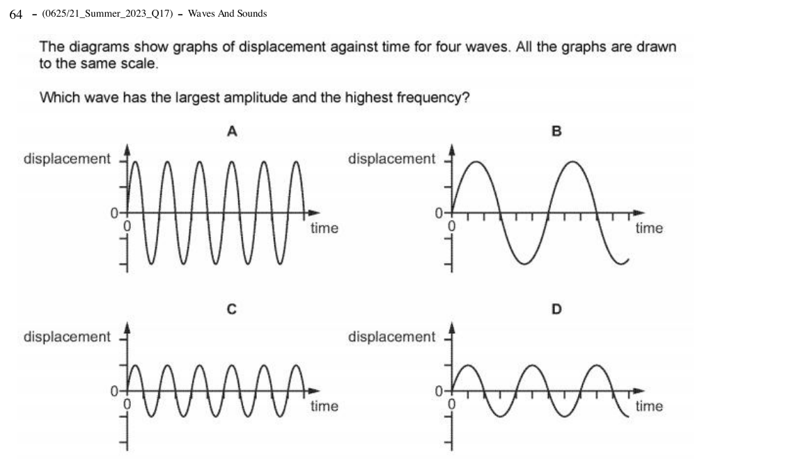
中文题意
图中给出了四个波的位移随时间变化的图像。所有图像都使用相同的刻度。
哪一个波的振幅最大，而且频率最高？
选项 A、B、C、D 为原图中的四幅图。坐标文字：displacement = 位移；time = 时间。
中文解析
答案：A。
1. 横轴表示时间，因此相邻波峰的水平间隔对应周期 T。读取波长则需要表示距离的横轴。
2. 振幅 A 是从平衡位置到波峰或波谷的最大竖直距离。图 A、B 的振幅大于 C、D。
3. 相同时间范围内，完整振动次数越多，频率越高；等价地，T 越小，f = 1/T 越大。A、C 的频率较高。
4. 同时满足“大振幅”和“高频率”的是图 A。图 B 虽然振幅较大，但周期较长；图 C 虽然频率较高，但振幅较小。
English explanation
Answer: A.
1. Read the horizontal axis first. It is time, so the horizontal spacing between neighbouring crests is the period T, not the wavelength.
2. Amplitude is the maximum vertical displacement from the equilibrium line. A and B have the larger amplitude.
3. With the same time scale, more complete oscillations mean a higher frequency. Equivalently, a smaller T gives a larger f because f = 1/T. A and C have the higher frequency.
4. Only graph A satisfies both requirements. B has a longer period; C has a smaller amplitude.
知识点与易错处
位移—时间图记录同一位置随时间的变化，因此相邻波峰之间的时间间隔是周期 T。位移—距离图记录同一时刻不同位置的状态，因此相邻波峰之间的距离是波长 λ。读取图像前，须根据横轴标注确定它表示哪一种量。
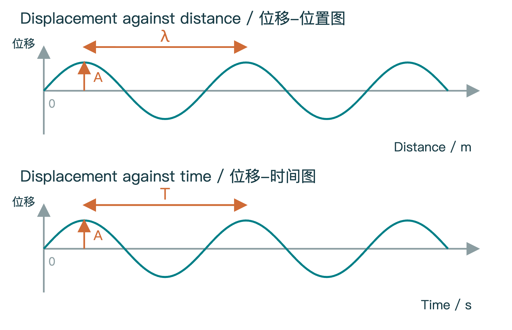
P2-02 · Reading amplitude and wavelength
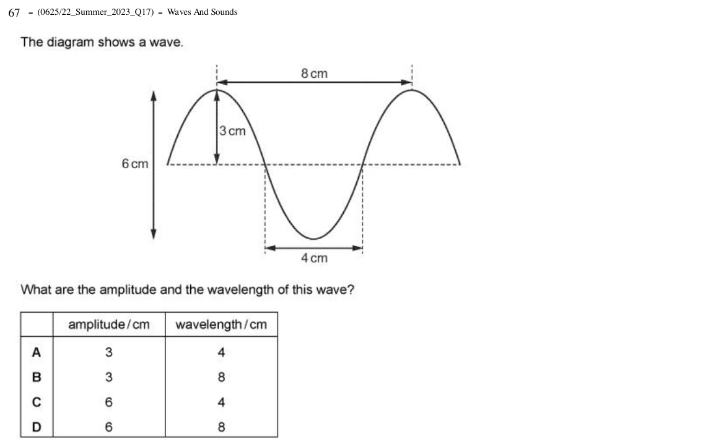
中文题意
图中显示一个波。
这个波的振幅和波长分别是多少？
选项顺序为“振幅 / cm，波长 / cm”：
A：3，4。
B：3，8。
C：6，4。
D：6，8。
图中保留了 3 cm、6 cm、4 cm 和 8 cm 的标注。
中文解析
答案：B，振幅为 3 cm，波长为 8 cm。
振幅从虚线所示的平衡位置量到波峰，所以读 3 cm。图中的 6 cm 是波峰到波谷的总高度，等于 2A。
波长是相邻同相位点之间的距离。相邻两个波峰之间为 8 cm，所以 λ = 8 cm。
图中的 4 cm 跨过一个波谷，两端虽然都处于平衡位置，但图上曲线在一端向下穿过平衡位置，在另一端向上穿过，两点并不同相；因此这个间隔只对应半个波长。
English explanation
Answer: B: amplitude = 3 cm and wavelength = 8 cm.
Measure amplitude from the dashed equilibrium line to a crest: 3 cm. The 6 cm peak-to-trough height is twice the amplitude.
A wavelength joins neighbouring points in the same phase. The two adjacent crests are 8 cm apart.
The 4 cm interval joins two equilibrium crossings on opposite slopes. They are not in the same phase, so this interval is only half a wavelength.
知识点与易错处
波峰到波谷的高度为 2A，因为它包含平衡位置上下各一个振幅。相邻两处斜率相反的平衡位置交点相隔 λ/2。判断两点是否同相时，除位移相同外，还必须处于同一振动阶段。
P4-01 · Seismic waves and the wave equation
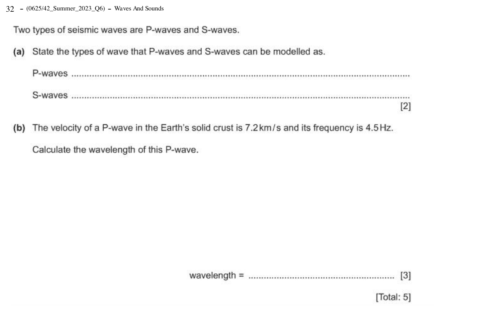
中文题意
地震波包括 P 波和 S 波两种类型。
(a) 写出 P 波和 S 波各可以用哪一种波型来建模。[2]
P 波：；S 波：。
(b) P 波在地球固体地壳中的速度为 7.2 km/s，频率为 4.5 Hz。计算这列 P 波的波长。[3]
波长 = ________。[总分 5]
中文解析
(a) P 波为纵波（longitudinal），S 波为横波（transverse），各 1 分。P 波的介质振动方向平行于传播方向；S 波的介质振动方向垂直于传播方向。
(b) 使用 v = fλ，移项得 λ = v/f。先换单位：7.2 km/s = 7.2 × 10³ m/s。
λ = 7200/4.5 = 1600 m = 1.6 km。
完整呈现公式、统一单位后的代入及带单位结果。也可以直接用 km/s 得到 km，但计算过程和最后单位必须一致。
地震波仍适用同一个波速公式。本题需要把振动方向与横波、纵波的定义对应起来，并在计算中正确处理 km 与 m 的千倍关系。
English explanation
(a) P-waves are longitudinal and S-waves are transverse, one mark each. For P-waves, particle vibrations are parallel to propagation; for S-waves they are perpendicular.
(b) Start with v = fλ and rearrange to λ = v/f. Convert 7.2 km/s to 7.2 × 10³ m/s.
λ = 7200/4.5 = 1600 m = 1.6 km.
Show the formula, a consistent substitution and a result with a unit. Working throughout in kilometres is also valid if the final wavelength is stated in kilometres.
The new context does not require a new equation. The key skills are identifying the wave types and maintaining consistent units.
知识点与易错处
地震波同样可以用已学的横波和纵波模型描述。P 波中粒子沿传播方向振动，因此属于纵波；S 波的振动方向垂直于传播方向，因此属于横波。解答本题只需应用这两类波的定义。
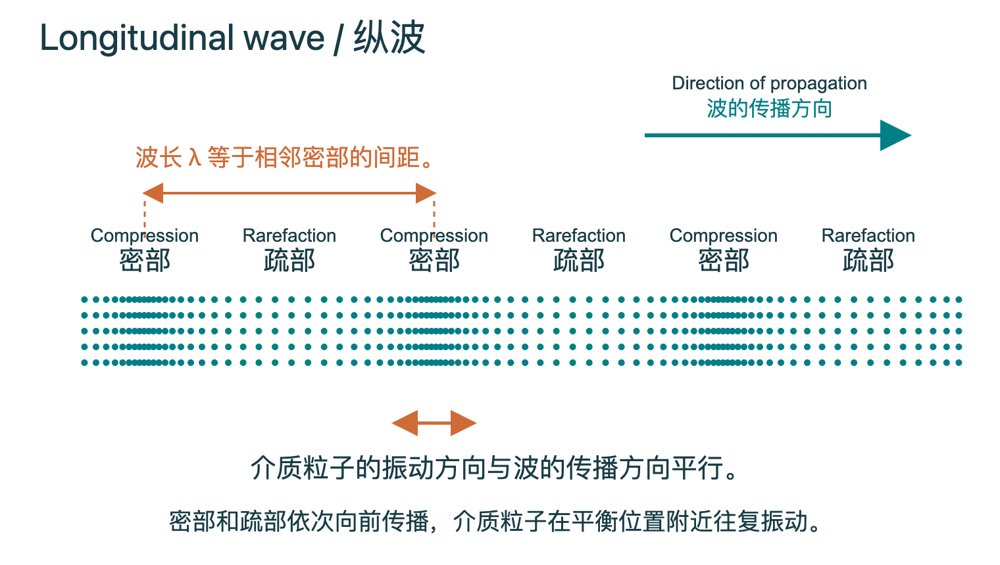
N16 · Diffraction through a gap
Water waves pass through a gap.
a) Describe what is meant by diffraction.
b) Explain why a narrow gap produces more diffraction than a wide gap.
c) State whether the frequency changes during diffraction.
中文题意
水波穿过一个缺口。
a) 描述什么是衍射。
b) 解释为什么窄缝比宽缝产生更明显的衍射。
c) 说明衍射过程中频率是否改变。
中文解析
a) 衍射是波穿过缺口或绕过边缘后向外扩展的现象。
b) 在波长相同的条件下，缝越窄，“缝宽/波长”的比值越小。缝宽与波长相近时扩展明显；缝远宽于波长时，中央部分大致直行，扩展主要出现在边缘。判断依据是缝宽相对波长的大小，不能只看绝对宽度。
c) 频率不改变，因为波源频率未变。如果水深和介质也不变，波速与波长同样不变；改变的是波前形状。
English explanation
a) Diffraction is the spreading of waves after passing through a gap or around an edge.
b) For the same wavelength, a narrower gap has a smaller gap-width-to-wavelength ratio. Spreading is conspicuous when the gap width is comparable to the wavelength; for a much wider gap, most of the central wavefront continues nearly straight, with spreading mainly near the edges. The important comparison is gap width with wavelength, not the word “narrow” on its own.
c) Frequency does not change. The source frequency is unchanged. If the medium and water depth are unchanged, speed and wavelength also remain unchanged; the wavefront's shape changes.
知识点与易错处
衍射描述波穿过缺口或绕过边缘后向外扩展的现象。扩展程度取决于缝宽相对于波长的大小，因此判断缝的宽窄时必须同时考虑所研究的波长。
P2-03 · Waves at a gap in a wall
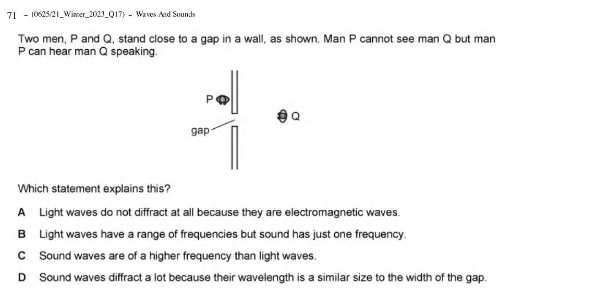
中文题意
两名男子 P 和 Q 站在墙上的一个开口附近，如图所示。P 看不见 Q，但 P 能听见 Q 讲话。
哪一个说法解释了这一现象？
A：光波完全不会衍射，因为它们是电磁波。
B：光波具有一系列频率，但声音只有一个频率。
C：声波的频率比光波更高。
D：声波会明显衍射，因为它们的波长与开口宽度相近。
图中 gap = 开口。
中文解析
答案：D。
波经过开口后向几何直线路径以外扩展，称为衍射。声波的波长与这个开口宽度相近，扩展比较明显，声能可以到达墙后的 P。
可见光的波长比日常墙上的开口小得多，因此在这个场景中衍射很弱，不能使 P 清楚看见 Q。
A 错在“完全不会”：电磁波也会衍射。B 错在“声音只有一个频率”：讲话声包含许多频率。C 把频率大小关系倒置；而且本题要比较波长与开口尺度。
English explanation
Answer: D.
Diffraction is the spreading of a wave beyond the straight-line path after it passes through a gap. The sound wavelength is comparable with the gap width, so sound spreads appreciably and reaches P.
Visible wavelengths are far smaller than an ordinary opening in a wall. Their diffraction is very small in this situation, so P cannot see Q clearly around the edge.
A is false because electromagnetic waves can diffract. B is false because speech contains many frequencies. C reverses the frequency comparison and does not identify the relevant wavelength-to-gap comparison.
知识点与易错处
光也能发生衍射，因为衍射是波的性质。扩展是否明显，取决于波长与开口宽度的比较。日常墙上的开口远宽于可见光的波长，因此光在这种情况下的衍射很不明显。
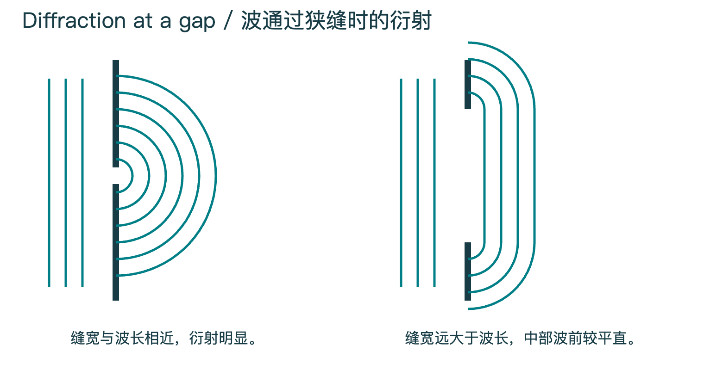
P4-02 · Drawing wavefronts after diffraction and refraction
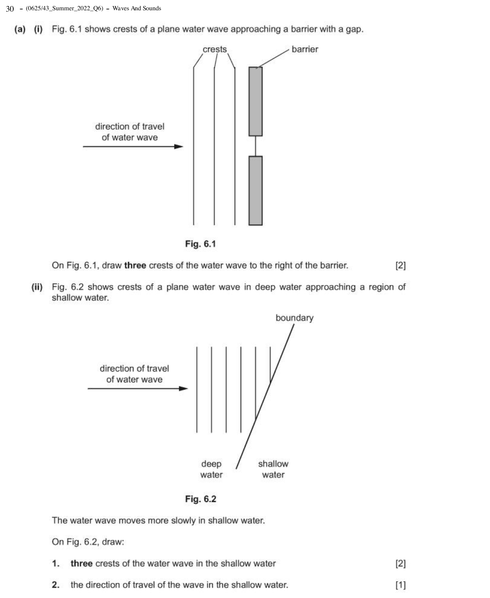
中文题意
本题选取原卷第 6 题的 (a) 部分。
(a)(i) 图 6.1 显示一列平面水波的波峰，正向一个有开口的障碍物传播。在图 6.1 中，在障碍物右侧画出该水波的三条波峰线。[2]
(a)(ii) 图 6.2 显示一列平面水波的波峰，正从深水区向浅水区传播。
水波在浅水中传播得更慢。
在图 6.2 中画出：
1. 浅水区中该水波的三条波峰线。[2]
2. 水波在浅水区中的传播方向。[1]
图中文字：crests = 波峰线；barrier = 障碍物；gap = 开口；boundary = 分界线；deep water = 深水；shallow water = 浅水；direction of travel = 传播方向。
中文解析
(a)(i) 水波经过开口后发生衍射，波前向外扩展。以开口中心为圆心，在右侧画三条依次向外的半圆或部分圆弧。三条波峰线之间保持等距，且间距等于入射波前的间距。评分分别关注波前的弧形／圆心，以及波长保持不变。传播介质没有改变，不能把波前越画越密。
(a)(ii) 在分界线处画出法线，作为判断折射角度的基准。浅水中速度减小，而频率不变，所以 λ = v/f 变小；三条出射波峰线的间距应比深水区更小。
水波进入较慢的浅水区时，传播方向向法线偏折。本图法线从界面指向浅水区时偏向右下方，因此出射传播箭头应比入射箭头更朝右下方，但不越过法线。
传播方向确定后，波峰线必须垂直于新的传播箭头，彼此平行且等距；本图浅水中的波峰线应由左下向右上倾斜。不要把“波前的方向”与“波传播的方向”画成同一方向。
本小题三个评分要点为波长缩短、正确折射、传播箭头垂直于波前。
English explanation
(a)(i) For diffraction, draw three semicircular or partly circular crests to the right, centred on the middle of the gap. Keep equal spacing, matching the incident wavelength. The marks distinguish the curved wavefront pattern from the unchanged wavelength. Do not make successive crests progressively closer together in the same medium.
(a)(ii) First identify the normal to the boundary. The wave slows down in shallow water while frequency remains constant, so λ = v/f decreases: draw closer-spaced crests.
Because the waves enter the slower shallow-water region, bend the propagation direction towards the normal. In this particular diagram, the normal into the shallow region points down and right. The transmitted arrow should therefore point down and right compared with the original horizontal arrow, without crossing the normal.
Draw three parallel, equally spaced crests perpendicular to that new arrow. In the given page orientation, they slope upwards to the right. A wavefront is not a ray: the direction of travel must be perpendicular to it.
The three marking points are shorter wavelength, correct refraction and a direction arrow perpendicular to the wavefronts.
知识点与易错处
界面法线是判断折射方向的基准。确定传播方向后，波前应画得与该方向垂直。波前间距须沿传播方向测量，因为纸面上任意一段水平或竖直距离未必等于波长。
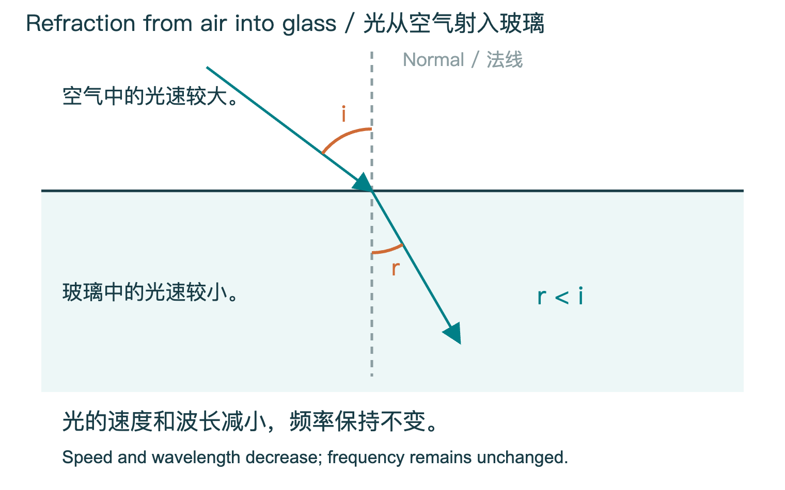
N05 · A tilted mirror
A mirror is angled at 30° to a flat table. A ray of light is directed vertically down onto the mirror.
a) Draw the normal.
b) Draw the reflected ray.
c) Find the angle between the incident and reflected rays.
中文题意
一面镜子与水平桌面成 30° 角。一束光竖直向下射到镜面上。
a) 画出法线。
b) 画出反射光线。
c) 求入射光线与反射光线之间的夹角。
中文解析
a) 在入射点画一条与镜面垂直的虚线作为法线。镜面相对水平倾斜 30°，因此法线相对竖直方向也倾斜 30°。
b) 入射光线与法线的夹角 i = 30°。在法线另一侧、原来入射的区域画反射光线，使 r = 30°；反射光线的箭头指向离开镜面的方向。
c) 在入射点，两段光线之间的夹角为 i + r = 30° + 30° = 60°。
要区分“图上两段光线的夹角”与“传播方向转过的角度”：入射箭头朝向镜面，因此传播方向的转角为 180° − 60° = 120°。本题和原笔记答案所指的是前者，答案为 60°。
English explanation
a) At the point where the ray hits the mirror, draw a dashed line perpendicular to the mirror. Since the mirror is 30° to the horizontal, this normal is 30° from the vertical line.
b) The angle of incidence measured between the incoming ray line and the normal is i = 30°. Draw the reflected ray on the other side of the normal in the incident region, with r = 30°, and put an arrow away from the mirror.
c) The angle between the incident and reflected ray segments at the point of incidence is i + r = 30° + 30° = 60°.
Distinguish this geometrical angle from the change in the light's direction of travel: the incoming arrow points towards the mirror, so the direction changes through 180° − 60° = 120°. The question/source answer uses the ray-segment angle, 60°, not the turning angle.
知识点与易错处
入射角和反射角都以法线为基准测量。法线垂直于镜面，反射定律要求两个角相等。镜面倾斜时，法线也随之倾斜，不能直接把桌面当作量角基准。
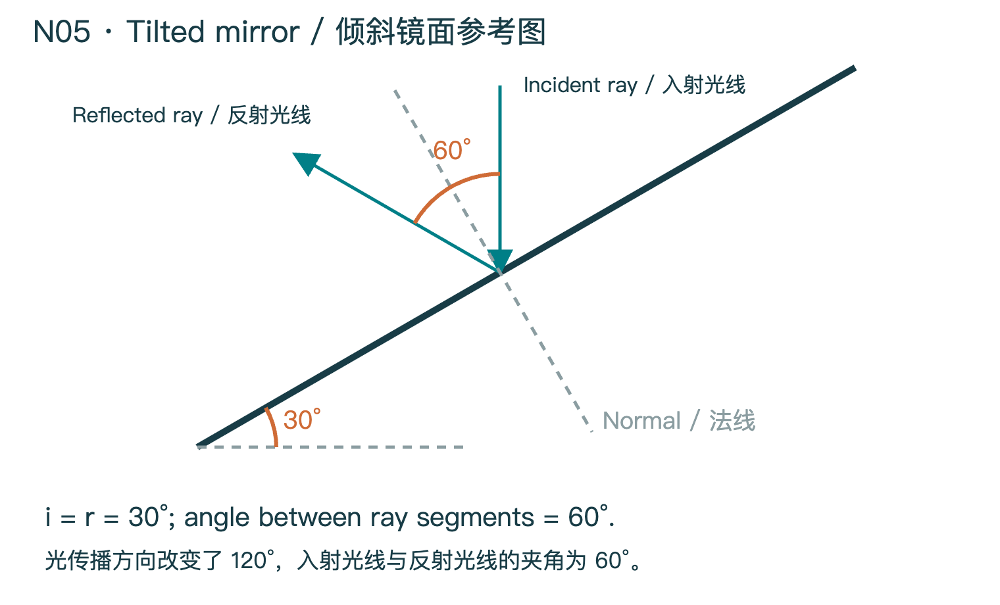
N14 · Reflection at a plane mirror
A ray of light hits a plane mirror with angle of incidence 35°.
a) State the angle of reflection.
b) Draw a labelled diagram showing the incident ray, reflected ray, mirror and normal.
c) State two properties of the image formed in a plane mirror.
中文题意
一束光以 35° 的入射角射到平面镜上。
a) 写出反射角。
b) 画一幅有标注的示意图，表示入射光线、反射光线、镜面和法线。
c) 写出平面镜所成像的两个性质。
中文解析
a) 由反射定律，r = i = 35°，角度均从法线量起。
b) 先画直线表示镜面；在入射点画与镜面垂直的虚线作为法线。画一条朝向镜面的入射光线，与法线成 35°；在法线另一侧画离开镜面的反射光线，也与法线成 35°。标出题目要求的四项，光线上添加方向箭头。
c) 以下任意两条均可：虚像、正立、与物体等大、像到镜面的垂直距离等于物体到镜面的垂直距离。例如“虚像，且与物体等大”是两个独立性质。
English explanation
a) r = i = 35°, measured from the normal.
b) Draw a straight mirror line. At the incidence point, draw a dashed normal at 90° to the mirror. Draw an incident ray towards the mirror making 35° with the normal. On the other side of the normal, draw the reflected ray away from the mirror at 35°. Label all four requested elements and show arrow directions.
c) Any two correct properties: virtual; upright; same size as the object; the same perpendicular distance behind the mirror as the object is in front. For example, “virtual and the same size as the object” gives two distinct properties.
知识点与易错处
反射定律要求从法线量起的入射角与反射角相等。平面镜形成正立、等大的虚像，像与物体到镜面的垂直距离相等。
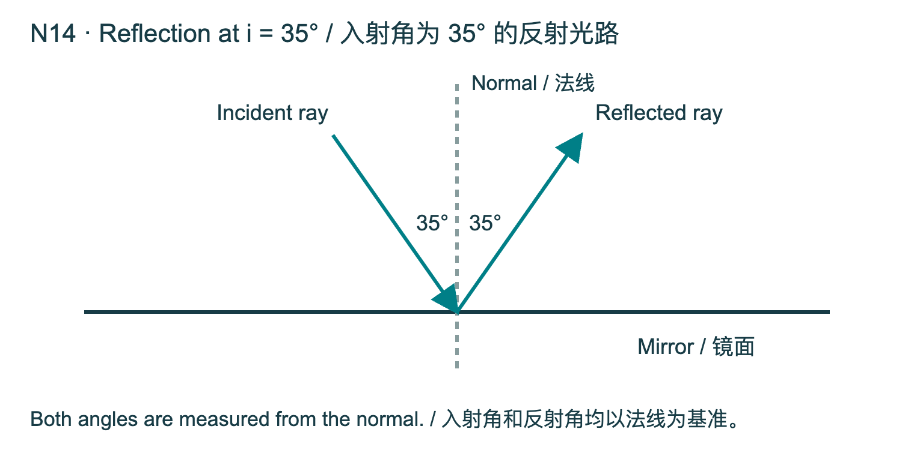
P2-04 · Angles at a plane mirror
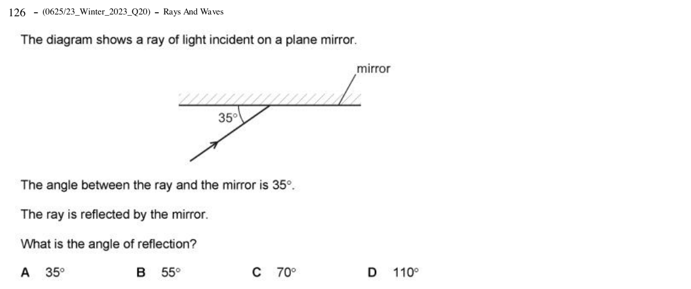
中文题意
图中显示一条光线入射到平面镜上。
光线与镜面之间的夹角为 35°。
光线被镜子反射。
反射角是多少？
A：35°。B：55°。C：70°。D：110°。
图中 mirror = 镜面。
中文解析
答案：B，55°。
1. 在入射点画一条垂直镜面的法线。
2. 入射角从入射光线量到法线，而题目给的是光线与镜面的夹角。因此 i = 90° − 35° = 55°。
3. 根据反射定律，反射角 r = i = 55°。
不能直接回答 35°；也不能把两条光线之间的夹角当作反射角。
English explanation
Answer: B, 55°.
1. Draw the normal perpendicular to the mirror at the point of incidence.
2. The angle of incidence is measured from the incident ray to the normal. The stated 35° is measured to the surface, so i = 90° − 35° = 55°.
3. By the law of reflection, r = i = 55°.
Neither the surface angle nor the angle between the incident and reflected rays is the angle of reflection.
知识点与易错处
反射定律 i = r 中的两个角都从法线量起。法线垂直于镜面，因此光线与镜面的夹角和光线与法线的夹角互为余角。遇到另一个反射面时，须按该面的方向确定新的法线。
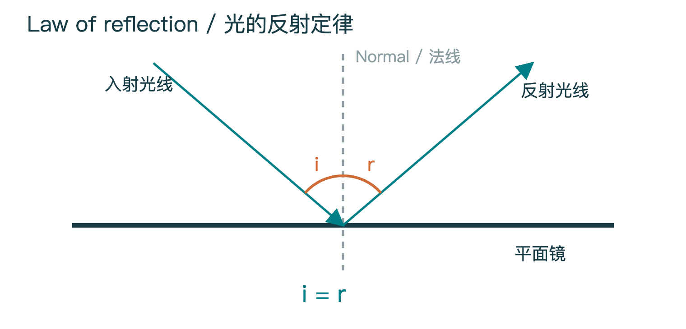
P4-03 · Finding the visible part of a wall in a mirror
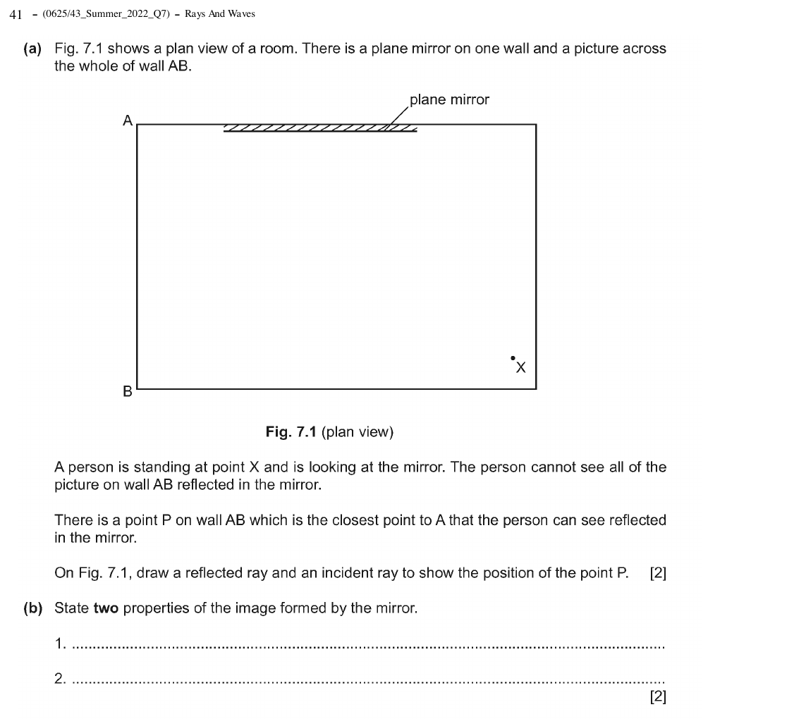
中文题意
本题选取原卷第 7 题的 (a)、(b) 部分。
(a) 图 7.1 是一个房间的俯视图。一面墙上装有平面镜，整面 AB 墙上都有一幅画。
一个人站在 X 点并看向镜子。这个人不能在镜中看到 AB 墙上整幅画。
AB 墙上有一点 P：它是这个人能在镜中看见的点中最靠近 A 的一点。
在图 7.1 上，画一条反射光线和一条入射光线，以确定 P 的位置。[2]
(b) 写出该镜所成的像的两个性质。[2]
图中文字：plane mirror = 平面镜；plan view = 俯视图。
中文解析
(a) 本题求视野边界。先把镜子的左端与眼睛 X 连接，得到能够到达眼睛的一条边界反射光线。
在镜子左端画垂直镜面的法线。让来自 AB 墙的入射光线与法线的夹角等于该反射线与法线的夹角，并将入射线延长到 AB；交点就是 P。入射光线的箭头应从 P 指向镜子左端，反射光线的箭头应从镜子指向 X。两段光线共同表示光从画面经过反射进入眼睛的过程。
更靠近 A 的墙上点需要在镜子左端之外反射才可能到达 X，因此不能通过现有镜面看见。可用另一个等效方法：作眼睛 X 关于镜面的对称点 X′，连接 X′ 与镜子左端并延长到 AB 来确定 P，然后补上真实光路。
评分表对本图要求使用镜子左端到眼睛的光线，并满足入射角等于反射角。
(b) 可写任意两项：virtual（虚像）、upright（正立）、same size as the object（与物体等大）、laterally inverted（侧向反转）。例如“虚像、等大”可得两项分。不要把“实像”或“放大”套到平面镜上。
English explanation
(a) This is a field-of-view boundary. Join the left-hand end of the mirror to the eye at X to construct the limiting reflected ray.
Draw a normal at that end of the mirror. Construct an incident ray from wall AB with the same angle to the normal as the reflected ray. Extend it to AB; the intersection is P. On the incident ray, the arrow must point from P towards the mirror. On the reflected ray, it must point from the mirror towards X. Together, these arrows show light travelling from the picture into the eye.
A wall point closer to A would require reflection beyond the left-hand end of the available mirror. An equivalent construction is to reflect X in the mirror to obtain X′, join X′ to the mirror’s left end and extend to AB, then add the real incident and reflected paths.
The mark scheme requires the ray from the mirror’s left-hand corner to the eye and equality of the incidence and reflection angles.
(b) Give any two: virtual, upright, the same size as the object, or laterally inverted. “Virtual and the same size” is one valid pair. A plane mirror does not produce a magnified real image.
知识点与易错处
有限大小的镜子只能反射落在其镜面范围内的光线，因此镜面端点决定观察者视野的边界光线。作眼睛关于镜面的对称点，可以辅助确定墙上可见点的位置；最终仍须画出从物体反射进入眼睛的真实光路。
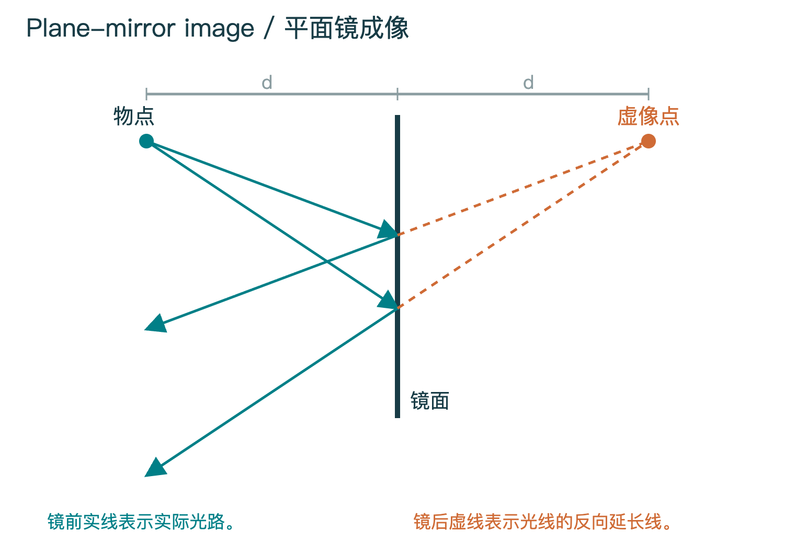
P6-03 · Tracing rays with two mirrors
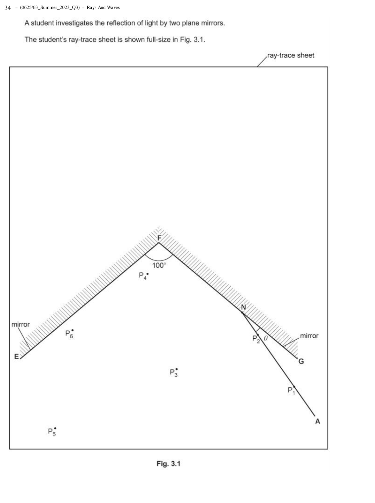
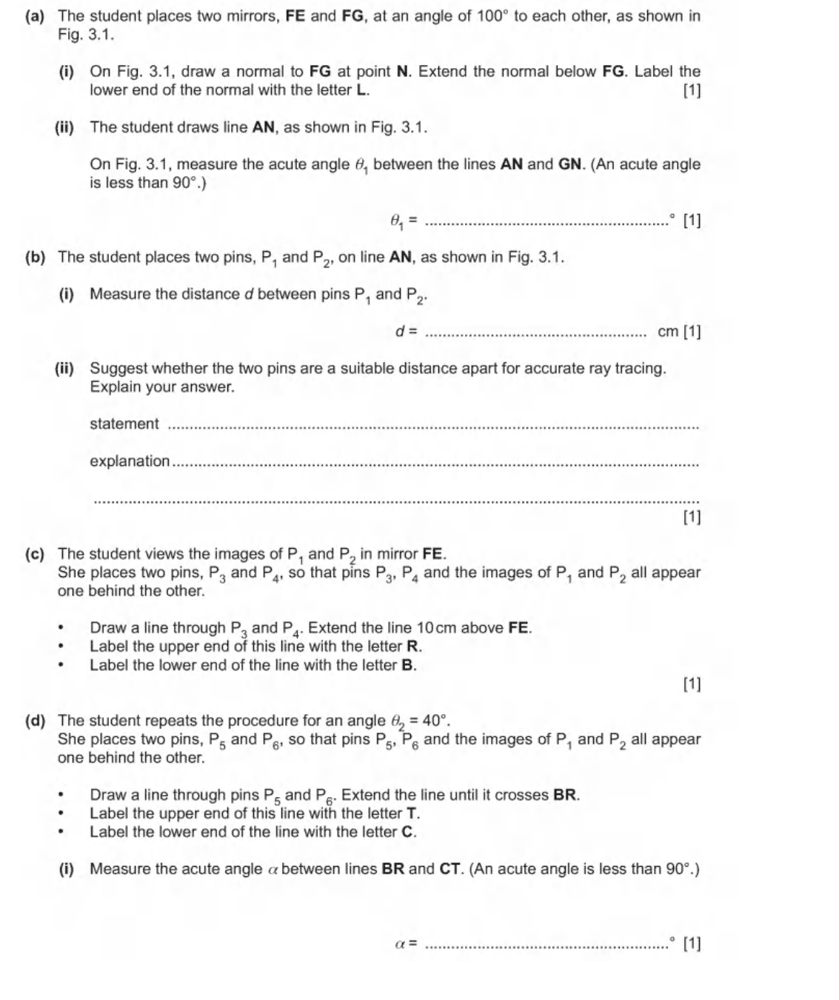
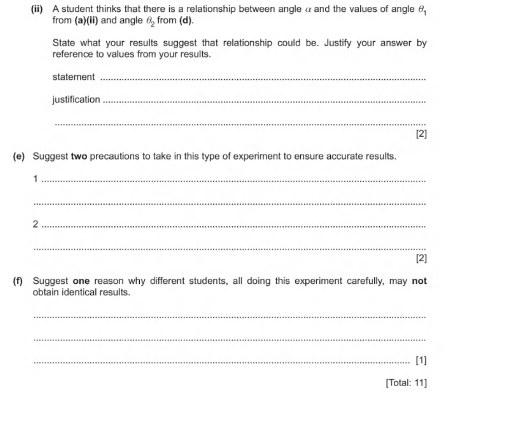
中文题意
一名学生研究光在两块平面镜上的反射。图3.1按实际尺寸表示该学生的光线描迹纸。
图中ray-trace sheet＝光线描迹纸；mirror＝平面镜；两镜为FE和FG，夹角100°；其余字母是题目指定的点和角。
【阅读提示：原题的“实际尺寸”描述保留；电子截图或题库再排版后，厘米长度可能已缩放。】
(a) 学生把两块平面镜FE和FG放成100°夹角，如图3.1所示。
(i) 在图3.1的N点画FG的法线。把法线延伸到FG下方，将法线较低的一端标为L。[1]
(ii) 学生画出图3.1所示直线AN。在图3.1上测量AN与GN之间的锐角θ₁。（锐角小于90°。）θ₁=____。[1]
(b) 学生把两根针P₁和P₂放在图3.1的AN线上。
(i) 测量P₁和P₂之间的距离d。d=____ cm。[1]
(ii) 判断两针的距离是否适合准确的光线描迹，并解释理由。[1]
(c) 学生在镜FE中观察P₁和P₂的像。他放置针P₃和P₄，使P₃、P₄与P₁、P₂的像看起来前后重合。画一条经过P₃和P₄的直线，把直线延长到FE上方10 cm的位置。将上端标为R，下端标为B。[1]
(d) 学生取θ₂=40°重复上述步骤。他放置针P₅和P₆，使P₅、P₆与镜FE中看到的P₁、P₂的像看起来前后重合。画一条经过P₅和P₆的直线，延长直到它与BR相交。将上端标为T，下端标为C。
(i) 测量BR与CT之间的锐角α。（锐角小于90°。）α=____。[1]
(ii) 一名学生认为α与(a)(ii)中θ₁、(d)中θ₂的数值之间存在某种关系。写出你的实验结果表明可能存在的关系，并引用结果中的数值说明理由。[2]
(e) 提出两项在这类实验中可以采取的预防措施，以确保结果准确。[2]
(f) 提出一个原因，说明为什么不同学生即使都认真进行实验，也可能得不到完全相同的结果。[1]
总分：11。
中文解析
(a)(i) 在N点画FG的垂线，向镜面下方延伸并标L。(ii) θ₁由AN与镜面GN构成，原图参考15°±1°；它不是通常定义的入射角，后者应是75°左右。
(b)(i) 评分细则的原尺寸参考d=3.5 cm。该值不是从本网页屏幕实测所得。(ii) 两针太近，不利于准确描迹；应把两针放得尽可能远，使相同位置误差对方向的影响较小。
(c) 通过P₃、P₄画细直线，延长到镜FE上方按原尺寸10 cm，依题意标R、B。延长线应与原线完全共线。
(d)(i) 通过P₅、P₆画直线并延长，与BR相交，标T、C。原图参考α=27°±2°。
(d)(ii) 一种与结果相符的关系是α≈θ₂−θ₁。用参考值计算40°−15°=25°；测量约27°与25°在实验精度内接近。写明自己的实测值并说明接近程度；不能为了使关系精确成立，就把27改为25。
(e) 两项可选措施：针保持竖直并从针底部对齐；把针距尽可能增大；用削尖铅笔画细线；使用较细的针。写两项不同且具体的措施。
(f) 针的有限粗细、放针位置的细微差异或对齐判断的差异，会造成测量差别。仅写“人为误差”不说明具体原因。
English explanation
(a)(i) Draw a perpendicular to FG through N. Extend it below FG and label the lower end L. (ii) θ₁ is the angle between AN and the mirror line GN. The original-diagram reference is 15° ±1°. It is not the conventional angle of incidence; that angle is approximately 75°.
(b)(i) The supplied mark scheme gives an original-size distance of 3.5 cm. This is not a measurement from the resized web image. (ii) The pins are too close together. Greater separation makes the direction less sensitive to a small pin-position error.
(c) Draw a thin straight line through P₃ and P₄, extend it 10 cm above FE at the original scale, and label the ends R and B as instructed. The extension must remain collinear.
(d)(i) Join P₅ and P₆ and extend the line to cross BR. Label T and C. The original-diagram reference for α is 27° ±2°.
(d)(ii) A relationship consistent with the measurements is α ≈ θ₂ − θ₁. Using the reference values, 40° − 15° = 25°. A measured angle of approximately 27° is close to 25° within the experimental precision. Quote your own values; do not alter a reading to force exact agreement.
(e) Give two distinct precautions. Examples include keeping the pins upright and sighting their bases, placing pins far apart, drawing thin lines with a sharp pencil, and using thin pins.
(f) Finite pin thickness, small differences in pin positions, or differences in alignment judgement can produce different readings. Name the actual cause rather than writing only “human error”.
知识点与易错处
测量时须采用题目给出的角度定义，因为光线与镜面的夹角不同于它与法线的夹角。较大的针间距、较细的描迹线和正确的观察方向有助于减小方向测量的不确定性。判断实验关系时，应结合实测数值和测量精度说明理由。
N06 · Finding the angle of refraction
A ray of light is incident on water at an angle of 25°.
The refractive index of water is 1.33.
Calculate the angle of refraction.
中文题意
一束光以 25° 的入射角射向水。
水的折射率为 1.33。
计算折射角。
中文解析
按本节上下文，采用“光从空气进入水”的条件；i = 25° 是光线与法线的夹角。
空气入水时 n = sin i/sin r，所以 sin r = sin 25°/1.33 = 0.3178…。
计算器设为角度制，r = sin⁻¹(0.3178…) = 18.53…°，约 18.5°（取整为 19°）。
r < i，符合光在水中减速并向法线偏折的规律。这里 sin⁻¹ 表示反正弦，不是倒数。
English explanation
Use the surrounding section's assumption that the ray enters water from air; i = 25° is measured from the normal.
For air into water, n = sin i/sin r, so sin r = sin 25°/1.33 = 0.3178… .
In degree mode, r = sin⁻¹(0.3178…) = 18.53…°, about 18.5° (or 19° to the nearest degree).
The result r < i agrees with light slowing down in water and bending towards the normal. This comparison checks whether the calculated angle is consistent with the expected refraction. sin⁻¹ here means the inverse-sine function, not a reciprocal.
知识点与易错处
光从空气进入水时，可用折射定律比较入射角与折射角的正弦值，两个角均从法线量起。本题的折射率比较光在空气中的近似真空光速与它在水中的传播速度。
N07 · Finding the angle of incidence
A Perspex block has refractive index 1.5.
The angle of refraction is 38°.
Calculate the angle of incidence.
中文题意
一块有机玻璃的折射率为 1.5。
折射角为 38°。
计算入射角。
中文解析
按原笔记所用的空气进入有机玻璃情境，r = 38° 位于有机玻璃内。
n = sin i/sin r，变形得 sin i = n sin r = 1.5 sin 38° = 0.92349…。
i = sin⁻¹(0.92349…) = 67.44…°，按原笔记取约 67°。
空气侧角度大于材料内角度，符合入射后向法线偏折。不要把 sin 38° 除以 1.5；那对应另一种已知条件。
English explanation
Follow the source's air-to-Perspex setup: r = 38° is inside the Perspex.
n = sin i/sin r gives sin i = n sin r = 1.5 sin 38° = 0.92349… .
i = sin⁻¹(0.92349…) = 67.44…°, approximately 67° as in the source.
The air-side angle is larger than the material-side angle, as expected for light bending towards the normal on entering Perspex. Do not divide sin 38° by 1.5: that would solve a different arrangement.
知识点与易错处
在 n = sin i/sin r 中，未知入射角位于正弦函数内。公式变形先求出入射角的正弦值，再用反正弦函数求出角度。计算器须使用角度制。
N08 · Critical angle at a water surface
Water has refractive index 1.33.
a) Calculate the critical angle.
b) Describe what happens when a ray travels upwards through water and hits the surface at 50°.
中文题意
水的折射率为 1.33。
a) 计算临界角。
b) 描述一束光在水中向上传播、以 50° 入射角到达水面时会发生什么。
中文解析
a) 按本节的题意，光从水中射向空气。达到临界状态时，折射光沿水面传播，它与法线的夹角为 90°。
sin c = 1/n = 1/1.33 = 0.75188…。
c = sin⁻¹(0.75188…) = 48.75…°，约 48.8°（取整为 49°）。
b) 光从较高折射率的水射向较低折射率的空气，且水中的入射角 i = 50° > c，满足全内反射的两个条件。光反射回水中；在本课程光线模型中，没有向空气传播的折射光线。
English explanation
a) The intended boundary is water to air. At the critical angle, the refracted ray makes 90° with the normal.
Use sin c = 1/n = 1/1.33 = 0.75188… .
c = sin⁻¹(0.75188…) = 48.75…°, approximately 48.8° (49° to the nearest degree).
b) The ray travels from higher n to lower n, and its internal angle i = 50° exceeds c. Both conditions for total internal reflection are met. The ray is reflected back into the water; in the school ray model, there is no transmitted refracted ray into the air.
知识点与易错处
材料与空气之间的临界角适用于光在材料内部射向空气的情形。发生全内反射时，界面另一侧介质的折射率必须较低，而且材料内的入射角必须大于临界角。
N15 · Light entering glass
A ray travels from air into glass.
a) Explain why the ray bends.
b) State whether the ray bends towards or away from the normal.
c) State what happens to the speed, wavelength and frequency.
中文题意
一束光从空气进入玻璃。
a) 解释为什么光线会偏折。
b) 说明光线是向法线偏折，还是远离法线偏折。
c) 说明光速、波长和频率分别发生什么变化。
中文解析
a) 对斜入射而言，光进入玻璃后减速。同一波前的一部分先进入较慢的区域，先减速，使波前转动，传播方向因此改变。
b) 向法线偏折：玻璃侧角度小于空气侧角度。
c) 光在玻璃中的速度减小。波源每秒产生振动的次数没有改变，因此频率保持不变。由 λ = v/f 可知，较小的波速除以不变的频率，得到较短的波长。
沿法线入射时需要另作说明：若光恰好沿法线入射，方向不变，但速度和波长仍会改变。题干说“偏折”，隐含斜入射情境，不能推广到所有入射方向。
English explanation
a) For oblique incidence, light slows down on entering glass. One part of a wavefront enters the slower region before another, so the wavefront rotates and the propagation direction changes.
b) It bends towards the normal: the glass-side angle is smaller than the air-side angle.
c) The speed decreases in glass. The frequency remains unchanged because the source still produces oscillations at the same rate. Since λ = v/f, dividing the lower speed by the unchanged frequency gives a shorter wavelength.
If the ray enters exactly along the normal, its direction does not change, although its speed and wavelength still change. The wording “bends” implies oblique incidence; it is not true for every incident direction.
知识点与易错处
斜入射时，同一波前的不同部分在不同时刻进入新介质，速度改变使波前转动，从而改变传播方向。通过静止界面时，波源决定的频率保持不变。
N17 · Calculating refractive index
A ray of light travels from air into a transparent block. The angle of incidence is 40° and the angle of refraction is 25°.
a) Calculate the refractive index of the block.
b) Explain what a larger refractive index means about the speed of light in the material.
中文题意
一束光从空气进入透明块。入射角为 40°，折射角为 25°。
a) 计算透明块的折射率。
b) 解释较大的折射率意味着光在材料中的传播速度怎样。
中文解析
a) 光从空气入射，可用 n = sin i/sin r。
n = sin 40°/sin 25° = 0.64279…/0.42262… = 1.52097… ≈ 1.52。
折射率没有单位。不能直接算 40/25，因为公式使用角度的正弦值。
b) n = c₀/v，其中 c₀ 为真空光速。因此 n 越大，v 越小，即光在材料中传播得越慢。比较时考虑同一频率的光。
English explanation
a) Because the ray enters from air, n = sin i/sin r.
n = sin 40°/sin 25° = 0.64279…/0.42262… = 1.52097… ≈ 1.52.
Refractive index has no unit. Dividing 40 by 25 would be incorrect because the formula uses the sines of the angles.
b) n = c₀/v, where c₀ is the speed of light in vacuum. As n increases, the same vacuum speed is divided by a larger value, so v decreases and light travels more slowly in that material. This statement compares the same light frequency in the materials.
知识点与易错处
光从空气进入材料时，可用入射角与折射角的正弦值计算材料的折射率。n = c₀/v 还说明，折射率越大，光在该材料中的传播速度越小。
N18 · The critical angle and conditions for total internal reflection
A material has refractive index 1.60.
a) Calculate its critical angle.
b) State the two conditions needed for total internal reflection.
c) Describe one use of total internal reflection.
中文题意
一种材料的折射率为 1.60。
a) 计算它的临界角。
b) 写出发生全内反射所需的两个条件。
c) 描述全内反射的一种用途。
中文解析
a) 按本节预期，第二种介质为空气。sin c = 1/n = 1/1.60 = 0.625。
c = sin⁻¹(0.625) = 38.682…° ≈ 38.7°。
b) 两个条件缺一不可：光由较高折射率介质射向较低折射率介质；在高折射率一侧的入射角大于临界角。i = c 时为沿界面传播的临界折射光线，在本光线模型中不作为全内反射。
c) 例如光纤通信：光脉冲在高折射率芯层与低折射率周围材料的界面反复发生全内反射，沿纤维传输信息。
English explanation
a) Assume the second medium is air, as intended in this notes section. sin c = 1/n = 1/1.60 = 0.625.
c = sin⁻¹(0.625) = 38.682…° ≈ 38.7°.
b) Both conditions are required: light travels towards a medium of lower refractive index (from optically denser to optically less dense), and its angle of incidence in the higher-index medium is greater than the critical angle. Equality i = c gives the critical ray along the boundary, not TIR in this ray model.
c) Optical-fibre communication uses total internal reflection to guide light pulses along the fibre. The pulses repeatedly reflect at the boundary between the higher-index core and the lower-index surrounding material, carrying information along the core.
知识点与易错处
临界角针对光从高折射率介质射向低折射率介质的情形定义。在材料与空气的界面，可使用本节的简化临界角公式。入射角必须超过临界角，才满足全内反射的角度条件。
N19 · Optical-fibre communication
An optical fibre carries information as pulses of light.
a) Explain how total internal reflection keeps the light inside the fibre.
b) State two advantages of optical fibre communication.
c) Explain why infrared may be used in optical fibres.
中文题意
一根光纤以光脉冲的形式传输信息。
a) 解释全内反射怎样使光保持在光纤内部。
b) 写出光纤通信的两个优点。
c) 解释为什么光纤中可以使用红外线。
中文解析
a) 光纤芯层的折射率高于包层。光到达芯层—包层界面时，若入射角大于临界角，就会全内反射回芯层。合适光线经过多次反射，沿光纤传播。解释中应同时包含折射率条件与角度条件。
b) 可答较高的信息传输容量，以及合适距离内较低的信号衰减；在适当情境下，抗电磁干扰也可。不能写“完全没有损耗”。
c) 玻璃对某些波长的红外线具有较好的透过性，因此选定波段的吸收和衰减较小；红外信号也可支持高数据传输率。不能概括为所有红外波长都同样容易穿过任何玻璃。
English explanation
a) The fibre core has a higher refractive index than its cladding. Light reaching the core–cladding boundary at an angle greater than the critical angle is totally internally reflected into the core. Repeated reflections guide suitable rays along the fibre. Both the index condition and angle condition should appear in the explanation.
b) Two advantages are a high data-transmission capacity and low signal attenuation over suitable distances. Other contextually valid advantages include resistance to electromagnetic interference. “No loss at all” is not correct.
c) Glass transmits certain infrared wavelengths well, so absorption/attenuation can be small in suitable wavelength bands. Infrared signals can also support high data rates. Do not claim that all infrared wavelengths pass through every glass equally well.
知识点与易错处
光纤利用高折射率芯层内的全内反射，使符合条件的光线沿纤维传播。光线能够被引导，并不代表信号强度完全不变；吸收等损耗仍会使光在传播中衰减。
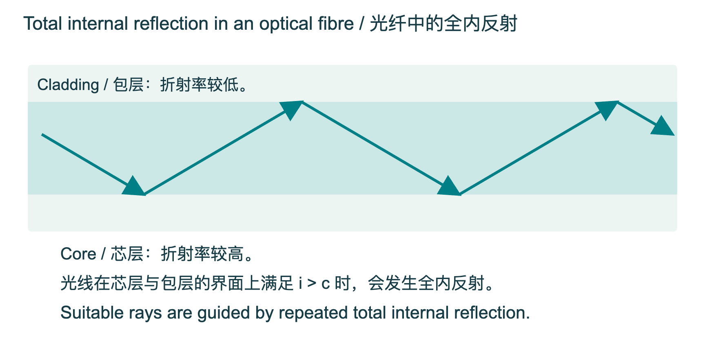
P2-05 · Using the refractive-index equation
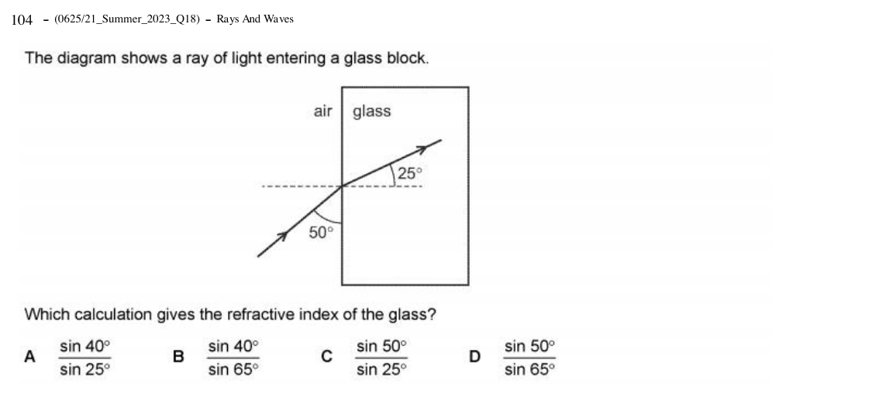
中文题意
图中显示一条光线进入玻璃块。
哪一个计算式能给出玻璃的折射率？
A：sin 40° / sin 25°。
B：sin 40° / sin 65°。
C：sin 50° / sin 25°。
D：sin 50° / sin 65°。
图中 air = 空气，glass = 玻璃；入射侧标出 50°，折射侧标出 25°。
中文解析
答案：A。
图中虚线是法线。左侧 50° 是入射光与竖直玻璃表面的夹角，因此真正入射角 i = 90° − 50° = 40°。右侧 25° 已从法线量起，所以 r = 25°。
光由空气进入玻璃，可使用 n = sin i / sin r，得到 n = sin 40° / sin 25°，约为 1.52。
B 错把已经从法线量起的 25° 又取了余角；C 没有把 50° 转为入射角；D 两处都用错。
English explanation
Answer: A.
The dashed line is the normal. The 50° angle is between the incident ray and the vertical glass surface, so i = 90° − 50° = 40°. The 25° angle is already measured from the normal, so r = 25°.
For light entering glass from air, n = sin i / sin r. Therefore n = sin 40° / sin 25°, approximately 1.52.
B unnecessarily replaces the correct refracted angle by its complement. C uses the surface angle as i. D makes both errors.
知识点与易错处
光从空气进入材料时，把空气的折射率近似为 1，便可用 n = sin i / sin r 求材料的折射率。入射角和折射角都必须从法线量起；若图中标出的是光线与表面的夹角，须先换成相应的法线夹角。对于其他两种介质，可用 n₁ sin i = n₂ sin r 表示两侧折射率与角度的关系。
P2-06 · Light crossing a boundary
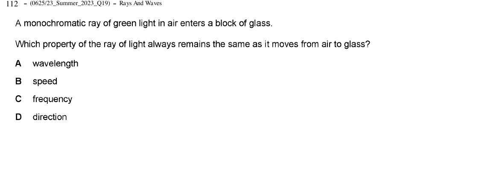
中文题意
空气中的一条单色绿光光线进入玻璃块。
当光线从空气进入玻璃时，光的哪一个性质始终保持相同？
A：波长。B：速度。C：频率。D：方向。
中文解析
答案：C，频率。
相继波前通过静止界面的频率保持连续，光在两种介质中的频率均由光源决定。
进入玻璃时光速减小。由 v = fλ，f 不变而 v 减小，因此 λ 也减小。
方向不是“始终相同”：斜入射时会偏折；沿法线入射时才不偏折。这也说明“方向没变”不能证明光速没变。
English explanation
Answer: C, frequency.
The rate at which successive wavefronts reach a stationary boundary is maintained across it; the source determines the frequency.
Light travels more slowly in glass. Since v = fλ and f is unchanged, the wavelength decreases with the speed.
Direction does not always remain the same: oblique incidence causes bending, whereas normal incidence does not. No bending therefore does not imply unchanged speed.
知识点与易错处
频率由波源决定，通过静止界面时保持不变。新的介质改变波速，由 v = fλ 可知，波长必须随之改变。这里讨论的介质和界面均处于静止状态。
P4-04 · Refraction into oil
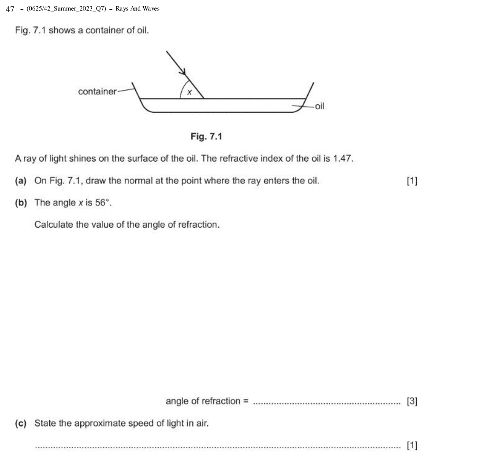
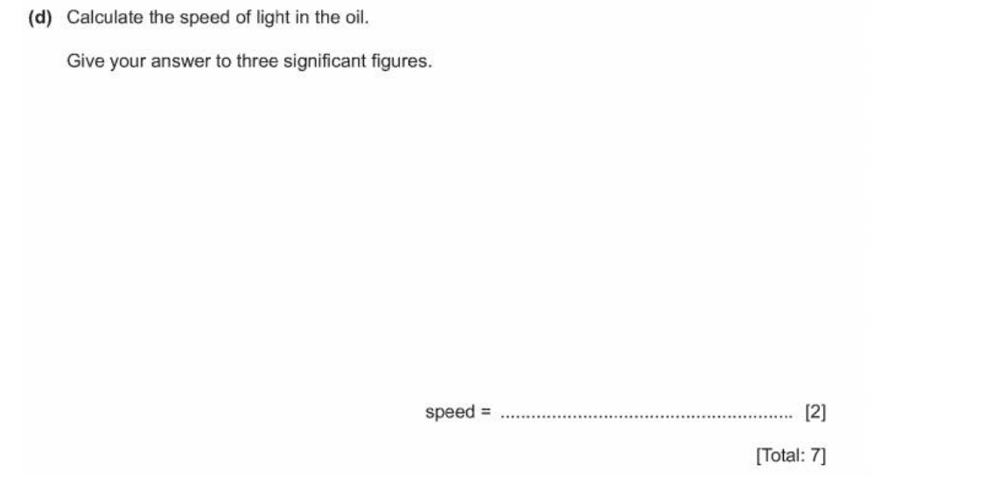
中文题意
图 7.1 显示一个盛有油的容器。
一条光线照到油的表面。油的折射率为 1.47。
(a) 在图 7.1 中，在光线进入油的位置画出法线。[1]
(b) 角 x 为 56°。计算折射角的大小。[3]
折射角 = ________。
(c) 写出光在空气中的近似速度。[1]
(d) 计算光在油中的速度。答案保留三位有效数字。[2]
速度 = ________。[总分 7]
图中文字：container = 容器；oil = 油。
中文解析
(a) 在入射点画一条垂直油面的直线；油面水平，故法线竖直。[1]
(b) 题图的 x 从液面量起，不能直接当作入射角。i = 90° − 56° = 34°。
由 n = sin i / sin r，得 sin r = sin 34° / 1.47 ≈ 0.3804。
r = sin⁻¹(0.3804) ≈ 22.36°，按本题取约 22°。计算器设为 DEG。检查：进入光学上较密的油后朝法线偏折，所以 r 应小于 i。
(c) 空气中的光速近似为 3.0 × 10⁸ m/s。[1]
(d) n = c/v，所以 v = c/n = (3.0 × 10⁸)/1.47 = 2.040816… × 10⁸ m/s。
题目要求保留三位有效数字，因此结果写为 2.04 × 10⁸ m/s。不要写成 2.0 × 10⁸，因为这只有两位有效数字；也不要把介质光速当成 c。
English explanation
(a) Draw a straight line through the entry point perpendicular to the oil surface. The surface is horizontal, so the normal is vertical. [1]
(b) The marked x is measured to the surface. Therefore i = 90° − 56° = 34°.
From n = sin i / sin r, sin r = sin 34° / 1.47 ≈ 0.3804.
r = sin⁻¹(0.3804) ≈ 22.36°, reported here as approximately 22°. Use degree mode. As a check, light bends towards the normal on entering the optically denser oil, so r must be less than i.
(c) The approximate speed in air is 3.0 × 10⁸ m/s. [1]
(d) Rearrange n = c/v to v = c/n = (3.0 × 10⁸)/1.47 = 2.040816… × 10⁸ m/s.
To the requested three significant figures, v = 2.04 × 10⁸ m/s. Writing 2.0 × 10⁸ gives only two significant figures; using c unchanged ignores the medium.
知识点与易错处
代入折射公式前，须把光线与表面的夹角换成它与法线的夹角。求出 sin r 后，用反正弦函数得到 r。有效数字从首个非零数字开始计算，保留三位有效数字与保留三位小数有不同含义。
P4-05 · Light in a curved glass block
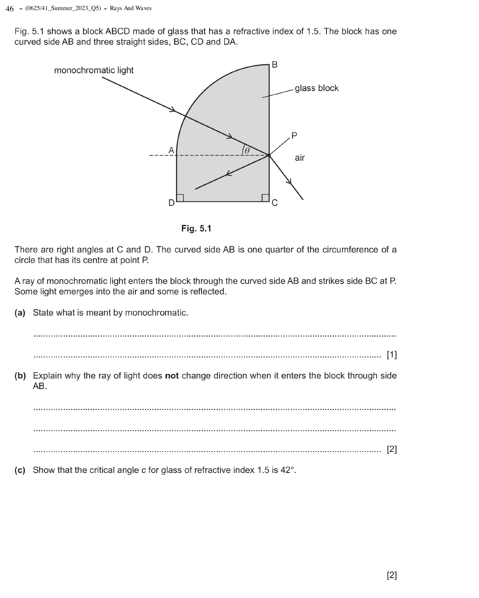
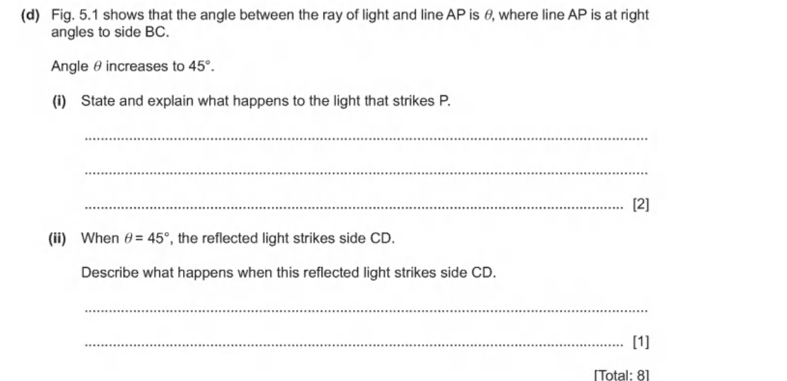
中文题意
图 5.1 显示玻璃块 ABCD，玻璃的折射率为 1.5。它有一个曲面 AB，以及 BC、CD、DA 三个平面。
C 和 D 处均为直角。曲面 AB 是以 P 为圆心的圆周的四分之一。
一条单色光线经曲面 AB 进入玻璃块，在 P 处照到 BC 面。一部分光射入空气，另一部分光被反射。
(a) 说明“单色光”的含义。[1]
(b) 解释光线经 AB 面进入玻璃块时为什么不改变方向。[2]
(c) 证明折射率为 1.5 的玻璃的临界角 c 约为 42°。[2]
(d) 图 5.1 中，光线与直线 AP 的夹角为 θ；AP 与 BC 垂直。角 θ 增大到 45°。
(i) 说明并解释照到 P 处的光会发生什么。[2]
(ii) 当 θ = 45° 时，反射光照到 CD 面。描述这束反射光到达 CD 面时会发生什么。[1]
[总分 8]
图中文字：monochromatic light = 单色光；glass block = 玻璃块；air = 空气。
中文解析
(a) 单色光是具有单一频率的光。用“single frequency”最直接对应评分点。[1]
(b) 光线沿圆的半径射向圆心 P。圆面在入射点的法线正沿半径，所以入射角为 0°，折射角也为 0°，方向不变。[2] 速度和波长仍改变，不能说“没有发生介质变化”。
(c) 由玻璃向空气传播的临界条件：sin c = 1/n。代入 n = 1.5，c = sin⁻¹(1/1.5) = 41.81…° ≈ 42°。[2]
(d)(i) AP 是 BC 的法线，所以 θ 就是 BC 处的入射角。光从玻璃向空气，且 45° > 41.81°，因此满足全反射的两个条件，所有光都在玻璃内反射，无折射光进入空气。[2]
(d)(ii) 反射定律使玻璃内反射光与水平法线成 45°；它到达水平 CD 面时，与该面的竖直法线也成 45°。这个角仍大于临界角，所以在 CD 再次发生全反射。[1]
核对光路时，BC 处须使用水平法线，CD 处须使用竖直法线。两个界面方向不同，所以计算各自的入射角时也要更换法线。
English explanation
(a) Monochromatic light has a single frequency. [1]
(b) The incident ray follows a radius towards the centre P. A radius is normal to a circular surface at the entry point, so the angle of incidence is 0° and the angle of refraction is also 0°: there is no change of direction. [2] Speed and wavelength still change on entry.
(c) At the glass–air critical angle, sin c = 1/n. Thus c = sin⁻¹(1/1.5) = 41.81…° ≈ 42°. [2]
(d)(i) AP is normal to BC, so θ is the incidence angle there. Light is travelling from glass towards air and 45° exceeds the critical angle. Both conditions for total internal reflection are satisfied: all the light is reflected within the glass. [2]
(d)(ii) The reflected ray makes 45° with the horizontal normal at BC. At the horizontal face CD, it also makes 45° with the new vertical normal. This again exceeds the critical angle, so total internal reflection occurs at CD. [1]
For a diagram check, use a horizontal normal at BC and a vertical normal at CD. Each boundary needs its own normal.
知识点与易错处
圆形曲面在入射点的法线沿该点所在的半径。光到达后续界面时，每个界面都有自己的法线，须分别判断入射角。达到临界角时，折射角为 90°，折射光沿界面传播；全内反射则要求入射角大于临界角。
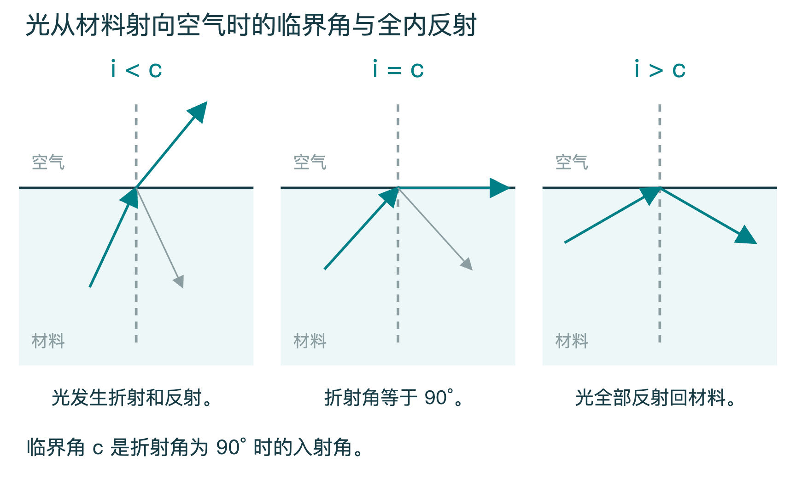
P6-02 · Tracing rays through a semicircular block
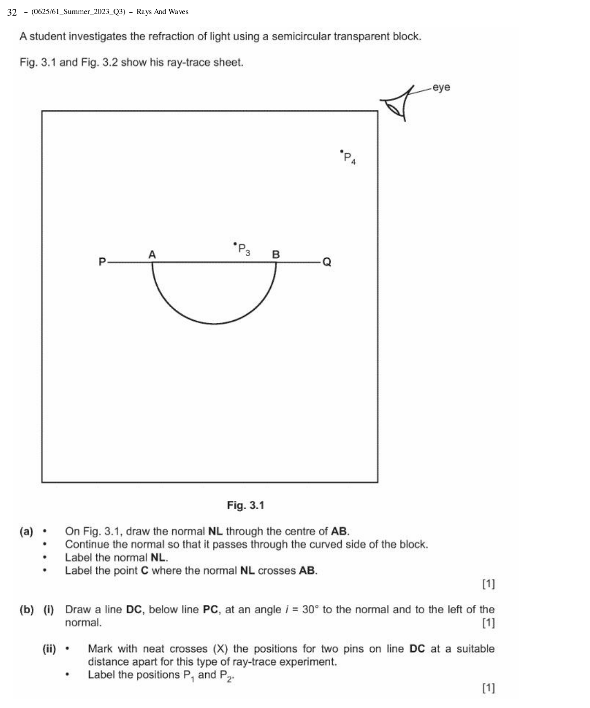
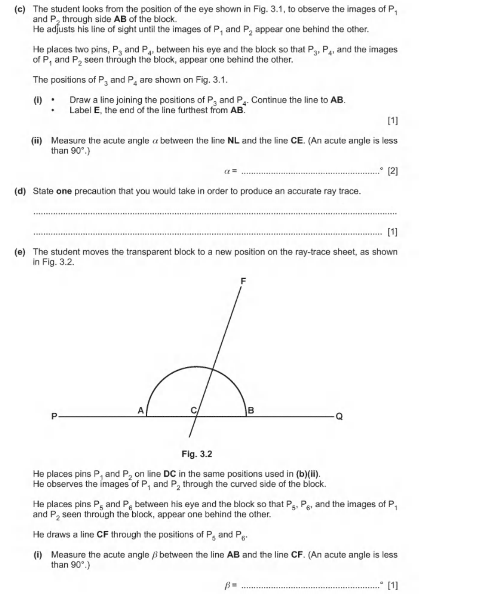
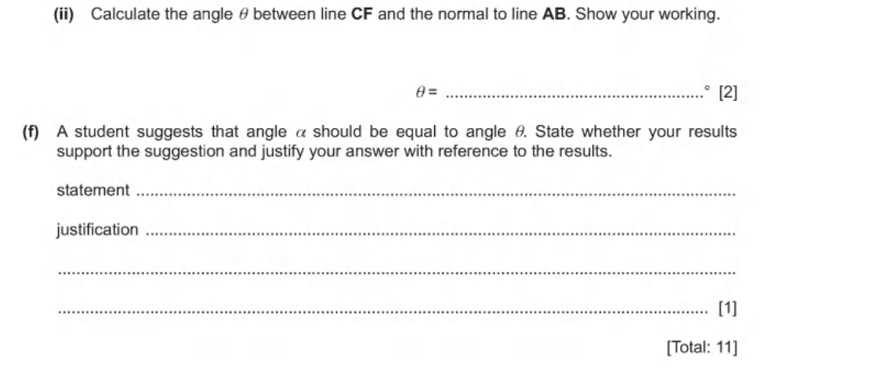
中文题意
一名学生使用半圆形透明块研究光的折射。图3.1和图3.2表示他的光线描迹纸。
图中eye＝眼睛，P₁、P₂、P₃、P₄、P₅、P₆表示针的位置；AB是透明块的平面边界。
(a) 在图3.1上，经过AB的中心画法线NL。继续延长法线，使其穿过透明块的曲面。标出法线NL。把法线NL与AB的交点标为C。[1]
(b)(i) 在PC下方、法线左侧画直线DC，使其与法线的夹角i=30°。[1]
(b)(ii) 在DC线上用整齐的叉号（X）标出两根针的位置，针间距应适合这类光线描迹实验。将两点标为P₁和P₂。[1]
(c) 学生从图3.1所示眼睛的位置，通过透明块的AB面观察P₁和P₂的像。他调整视线，直到P₁和P₂的像看起来前后重合。他在眼睛与透明块之间放置两根针P₃和P₄，使P₃、P₄和通过透明块看到的P₁、P₂的像看起来前后重合。P₃和P₄的位置已标在图3.1上。
(i) 画一条连接P₃和P₄位置的直线，将它延长到AB。把距离AB最远的那一端标为E。[1]
(ii) 测量NL与CE之间的锐角α。（锐角小于90°。）α=____。[2]
(d) 写出你会采取的一项预防措施，以获得准确的光线描迹。[1]
(e) 学生把透明块移到光线描迹纸上的新位置，如图3.2所示。他把针P₁和P₂放在DC线上，位置与(b)(ii)相同。他通过透明块的曲面观察P₁和P₂的像。他在眼睛与透明块之间放置两根针P₅和P₆，使P₅、P₆和通过透明块看到的P₁、P₂的像看起来前后重合。他画出经过P₅、P₆位置的直线CF。
(i) 测量AB与CF之间的锐角β。（锐角小于90°。）β=____。[1]
(ii) 计算CF与AB法线之间的夹角θ。写出计算过程。θ=____。[2]
(f) 一名学生提出α应该等于θ。说明你的实验结果是否支持这一说法，并引用实验结果说明理由。[1]
总分：11。
中文解析
(a) 在AB中点C作垂直于AB的直线NL，并延伸穿过曲面。法线与界面夹角为90°。
(b)(i) 从C向左下方画DC，量角器以法线为基准，标出30°；参考评分容许±2°。
(b)(ii) 两个叉号须在DC上，标清P₁、P₂。按原尺寸，两针至少相距5.0 cm。两针距离越大，同样大小的针位偏差对所确定方向的影响越小。
(c) 用细直线连接P₃、P₄并延长到AB；E在离AB较远的一端。量NL与CE之间的锐角，原图参考α约49°，评分范围47°-51°。法线、入射线和出射线应在C附近相交。
(d) 任写一项具体措施：保持针竖直；观察针底部进行对齐；把针间距尽可能增大；使用削尖铅笔画细线。
(e)(i) β是CF与表面AB之间的角，原图约72°，评分范围70°-73°。(ii) θ以法线为基准，所以θ=90°−β。例如β=72°时，θ=18°。必须使用自己的β值，并写出减法过程。
(f) 不支持。约49°与约18°差异很大，超过合理实验精度；在答卷中引用自己的α和θ。不要把“光路可逆”错误套用成在不同介质中保持相同入射角时，折射角一定相等。
针距要求适用于实际装置或原尺寸图，而手册中的截图可能经过缩放。等比例缩放不改变角度，但横纵不等比例拉伸会改变角度。
English explanation
(a) Mark C at the midpoint of AB. Draw NL through C at 90° to AB and extend it through the curved surface.
(b)(i) Draw DC in the lower-left region from C. Measure 30° from the normal, not from AB. The supplied marking tolerance is ±2°.
(b)(ii) Place two neat crosses on DC and label them P₁ and P₂. At the original scale, the pins should be at least 5.0 cm apart. A longer separation reduces the angular effect of a small positioning error.
(c) Join P₃ and P₄ with a thin straight line and extend it to AB. Label the end furthest from AB as E. Measure the acute angle between NL and CE. The original-diagram reference is approximately 49°, with 47°-51° accepted. The normal and ray lines should meet at or very close to C.
(d) Give one specific precaution, such as keeping the pins vertical, sighting along the bases of the pins, increasing the pin separation, or using a sharp pencil to draw thin lines.
(e)(i) β is measured between CF and the surface AB. The reference is approximately 72°; 70°-73° is accepted. (ii) The normal is perpendicular to AB, so θ = 90° − β. If β = 72°, θ = 18°. Use your own measured β and show the subtraction.
(f) The results do not support the suggestion. Approximately 49° and 18° differ by much more than the expected experimental uncertainty. Quote your own values. Reversibility does not mean that using the same numerical incident angle in two different incident media gives equal refracted angles.
The pin-distance requirement refers to the real apparatus or original-size diagram. A screenshot may have been resized. Uniform scaling preserves angles; unequal horizontal and vertical scaling does not.
知识点与易错处
法线经过入射点并垂直于界面，光线与界面的夹角和它与法线的夹角互为余角。插针描迹时，针与它们的像应在同一视线中重合。保持针竖直并增大针间距，有助于准确确定这条视线的方向。
N20 · The image formed by an object between F and 2F
An object is placed between F and 2F of a converging lens.
a) Draw a ray diagram to locate the image.
b) Describe the image using three words chosen from: real, virtual, upright, inverted, enlarged, diminished.
中文题意
一个物体放在会聚透镜的 F 与 2F 之间。
a) 画光路图确定像的位置。
b) 从下列词语中选三个描述该像：实像、虚像、正立、倒立、放大、缩小。
中文解析
a) 画主光轴和透镜，在两侧对称标出 F、2F。在一侧 F 与 2F 之间画正立物体箭头。
从物体顶端作一条平行主轴的光线，折射后通过远侧焦点 F；再作一条通过光心的光线，按薄透镜模型直线前进。将两条真实出射光线延长至另一侧 2F 外相交。交点位于主轴下方，对应像的顶端，在那里画倒立像箭头；光线上添加方向箭头。
b) 实像、倒立、放大。真实出射光线会聚，所以是实像；像箭头在主轴下方，所以倒立；像高大于物高，所以放大。
English explanation
a) Draw the principal axis and lens; mark F and 2F on both sides at matching distances. Place an upright object arrow between F and 2F on one side.
From the top of the object, draw a ray parallel to the axis; after refraction it passes through the far-side F. Draw a second ray through the optical centre, continuing straight. Extend the two actual outgoing rays until they intersect beyond 2F on the other side. That intersection locates the top of the image, below the axis; draw the inverted image arrow there. Add arrowheads to the light rays.
b) Real, inverted, enlarged. It is real because actual outgoing rays meet, inverted because the image arrow is below the axis, and enlarged because its height exceeds the object's height.
知识点与易错处
平行于主光轴的光线经过会聚透镜后通过远侧焦点；在薄透镜模型中，经过光心的光线保持直线传播。真实出射光线相交的位置形成实像，反向延长线相交的位置则确定虚像。
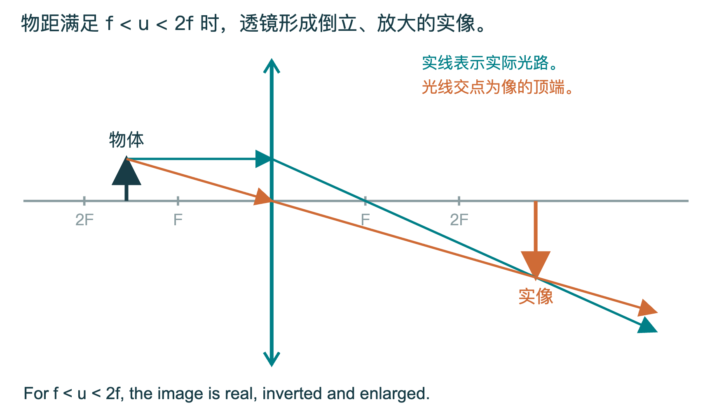
N21 · A magnifying glass
A converging lens is used as a magnifying glass.
a) Where should the object be placed?
b) Describe the image formed.
c) Explain why the image cannot be formed on a screen.
中文题意
用一个会聚透镜作为放大镜。
a) 物体应该放在哪里？
b) 描述所成像的性质。
c) 解释为什么这个像不能形成在光屏上。
中文解析
a) 把物体放在透镜与近侧主焦点之间，即物距小于焦距，0 < u < f。
b) 成正立、放大的虚像，位于物体与透镜的同一侧。
c) 真实出射光线发散，只有它们的反向延长线在像的位置相交，光并没有实际在那里会聚，所以该位置的光屏不能接到这个放大像。真实出射光仍能进入眼睛，因此人可以看见虚像。
English explanation
a) Place the object between the lens and its near-side principal focus: its distance from the lens is less than the focal length, 0 < u < f.
b) The image is virtual, upright and enlarged, on the same side of the lens as the object.
c) The actual emerging rays diverge. Their backward extensions intersect at the apparent image position, but the light does not really converge there. A screen at that position therefore cannot receive this enlarged image. A person can still see it because the emerging light reaches the eye.
知识点与易错处
物体位于会聚透镜焦距以内时，透镜形成虚像。出射光线发散，看起来仿佛来自它们反向延长线的交点，因此在该交点处放置光屏不能接到这个像。
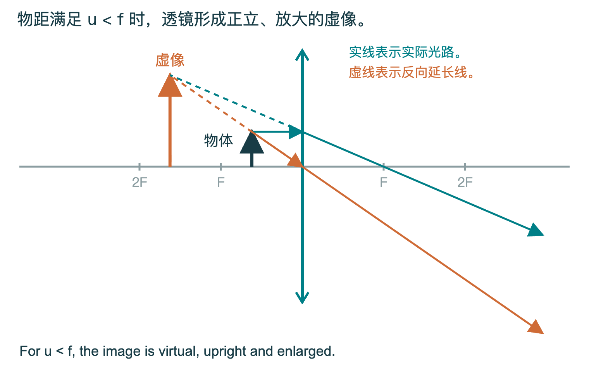
N22 · Short sight and long sight
a) Describe short sight.
b) State the lens used to correct short sight.
c) Describe long sight.
d) State the lens used to correct long sight.
中文题意
a) 描述近视。
b) 写出矫正近视所用的透镜。
c) 描述远视。
d) 写出矫正远视所用的透镜。
中文解析
a) 近视者通常看近物清楚、看远物模糊。未矫正时，远物的光线会在视网膜前会聚。
b) 发散透镜，即凹透镜。它先使进入眼睛的光适当发散，使眼睛最后在视网膜上成像。
c) 远视者看近物困难；眼睛对近物发出的光会聚能力不足，若光线继续传播，会在视网膜后方会聚。在本课程的简化描述中，远物通常较清楚。
d) 会聚透镜，即凸透镜。它先增加光的会聚程度，使眼镜与眼睛共同在视网膜上成像。
English explanation
a) In short sight, nearby objects can be seen clearly but distant objects appear blurred. Light from a distant object would focus in front of the retina in the uncorrected eye.
b) A diverging (concave) lens. It spreads incoming rays before they enter the eye, allowing the eye to focus them on the retina.
c) In long sight, nearby objects are difficult to see clearly; the eye does not converge their light enough, so the focus would lie behind the retina. Distant objects are typically clearer in the school-level description.
d) A converging (convex) lens. It adds convergence so that the combined lens-and-eye system forms the image on the retina.
知识点与易错处
看清物体需要光在视网膜上会聚。发散透镜减小入眼光的会聚程度，会聚透镜增加其会聚程度。应根据未矫正时焦点落在视网膜的前方还是后方，选择合适的透镜。
P2-07 · A converging lens as a magnifier
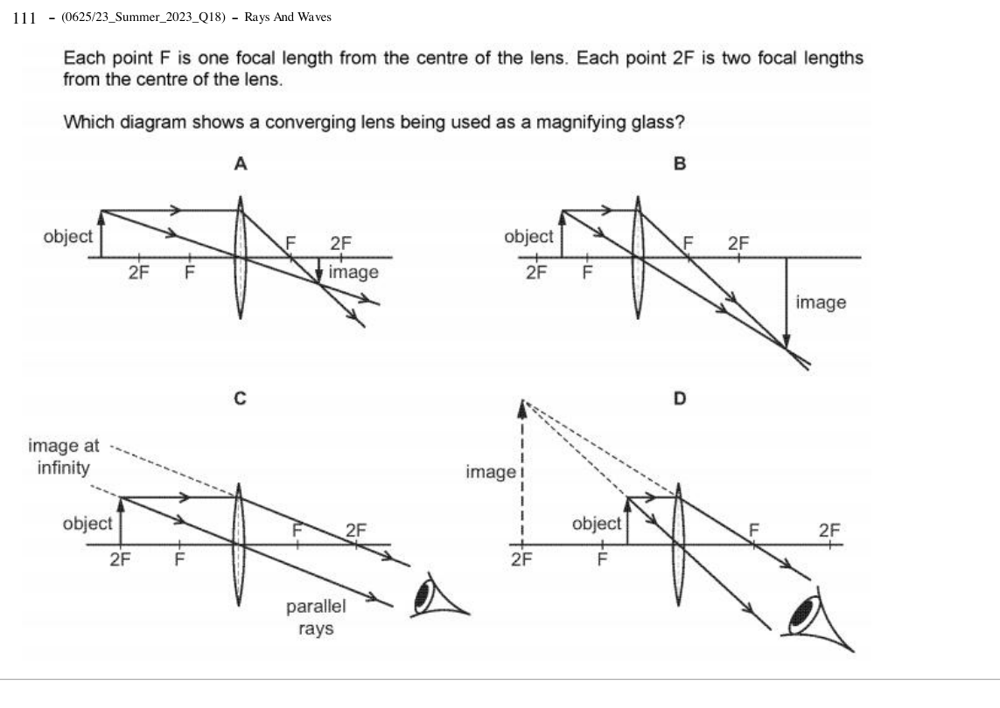
中文题意
每个 F 点到透镜中心的距离等于一个焦距。每个 2F 点到透镜中心的距离等于两个焦距。
哪幅图表示一个会聚透镜被用作放大镜？
A、B、C、D 的光路见原图。
图中文字：object = 物体；image = 像；image at infinity = 像在无穷远；parallel rays = 平行光线。
中文解析
答案：D。
放大镜的这一标准光路要求物体位于透镜与近侧焦点之间，即 u < f。两条出射光线实际向右传播且相互发散；把它们向左反向延长，延长线在物体同侧相交。像正立、放大，并且为虚像。
A、B 画的是在另一侧形成的倒立实像，不能满足本题的放大镜图。C 把物体画在 2F，却画出平行出射光；这与会聚透镜的作图规则不一致。物体在 2F 时应在另一侧 2F 形成等大倒立实像。
眼睛的位置只说明观察者在哪里，不能单独证明光路正确；还须同时核对物距和光线的画法。
English explanation
Answer: D.
For this standard magnifier arrangement, the object is between the lens and its near focal point: u < f. The actual outgoing rays travel to the right and diverge. Extending them backwards makes them intersect on the object side, giving an upright, enlarged, virtual image.
A and B show inverted real images on the other side. C places the object at 2F but incorrectly shows parallel outgoing rays. An object at 2F should form an inverted, same-size real image at 2F on the other side.
The presence of an eye in a drawing is not enough: check the object position and the consistency of the rays.
知识点与易错处
选择题中的干扰图可能故意画错光线。应检查入射光线的位置、经过光心的光线是否沿直线传播，以及焦点和物距是否与出射光线一致。即使图中写有 parallel rays，也仍需核对这些光线是否真的应该平行。
P4-06 · Constructing an image and correcting a vision defect
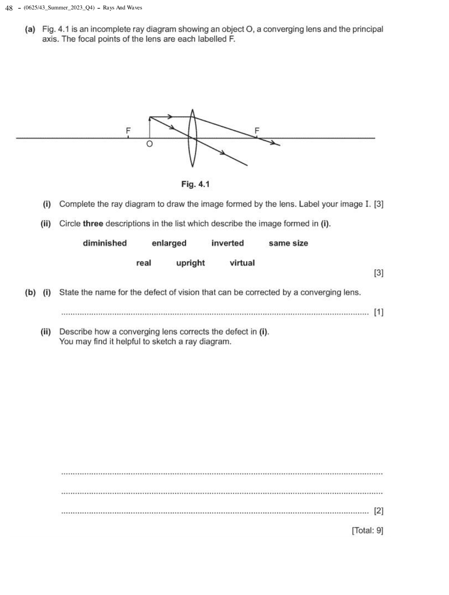
中文题意
(a) 图 4.1 是一幅未完成的光路图，显示物体 O、一个会聚透镜和主光轴。透镜的两个焦点均标为 F。
(i) 完成光路图，画出透镜所成的像，并把像标为 I。[3]
(ii) 在下列描述中圈出三个，用来描述 (i) 中形成的像：[3]
缩小；放大；倒立；等大；实像；正立；虚像。
(b)(i) 写出可以用会聚透镜矫正的视力缺陷的名称。[1]
(ii) 描述会聚透镜如何矫正 (i) 中所述的视力缺陷。画一幅光路草图可能对你有帮助。[2]
[总分 9]
中文解析
(a)(i) 图中物体位于透镜与左侧焦点 F 之间，两条给定出射光线在右侧发散。把这两条出射光线沿原直线向左反向延长，使用虚线表示辅助延长线。它们的交点给出像的顶端；从主轴画一支指向该交点的正立像箭头，并标 I。像位于物体同侧、比物体更远离透镜且更高。[3]
三个关键是：正确反向延长两条光线；延长线相交；从交点画出位置正确的像。实际光线并没有从透镜向左折回。
(a)(ii) 圈 enlarged（放大）、upright（正立）、virtual（虚像）。[3] 虚像是出射光线反向延长线的交点，不能在光屏上形成这个像。
(b)(i) Long-sightedness / far-sightedness，远视。[1]
(b)(ii) 对近物，远视眼的会聚能力不足，光线若继续传播会在视网膜后方相交。眼前的会聚透镜先使入眼光更会聚，将最终会聚点前移，使光线在视网膜上形成清晰的像。[2]
画草图时，可从同一近物上的一点画出两条发散光线。光线经眼镜后向内偏折，再经眼睛会聚于视网膜；把“未经矫正的焦点在视网膜后方”用辅助虚线单独表示。
English explanation
(a)(i) The object lies between the lens and the left focus. The two given outgoing rays diverge on the right. Extend both rays backwards to the left along straight dashed lines. Their intersection gives the top of the image. Draw an upright image arrow from the principal axis to that point and label it I. The image is on the object side, farther from the lens and taller than the object. [3]
The construction needs correct backward extensions, their intersection and the correctly positioned image. The actual light has not turned back to travel to the left.
(a)(ii) Circle enlarged, upright and virtual. [3] A virtual image is located by backward extensions, so it cannot be captured on a screen.
(b)(i) Long-sightedness / far-sightedness. [1]
(b)(ii) For a near object, the uncorrected eye does not converge the rays enough; they would meet behind the retina. A converging spectacle lens makes the incoming rays more convergent, bringing the final focus forwards onto the retina. [2]
For a sketch, show rays from a near object bending inward at the spectacle lens and then meeting on the retina after passing through the eye. Show any uncorrected behind-retina focus separately with construction lines.
知识点与易错处
眼镜先改变进入眼睛的光线，眼睛再使这些光线在视网膜上成像。虚像作图中的反向延长线用于确定光线看起来来自的位置，它们不表示真实光线反向传播。
P6-04 · Lens magnification and diagram scales
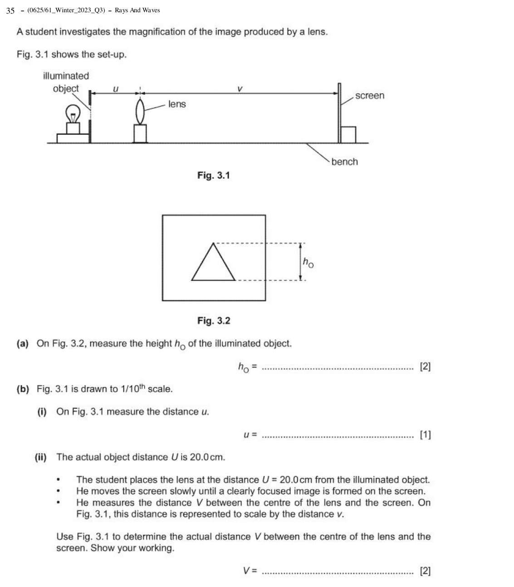
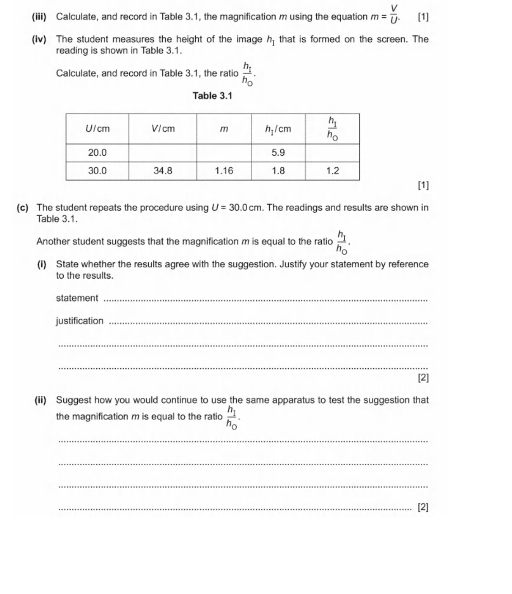
中文题意
一名学生研究透镜所成像的放大率。图3.1表示实验装置。
图中illuminated object＝被照亮的物体；lens＝透镜；screen＝屏幕；bench＝实验台。u标在物体与透镜之间，v标在透镜与屏幕之间。图3.2表示物体及物高h₀。
(a) 在图3.2上测量被照亮物体的高度h₀。h₀=____。[2]
(b) 图3.1按1/10比例绘制。
(i) 在图3.1上测量距离u。u=____。[1]
(ii) 实际物距U为20.0 cm。学生把透镜放在离被照亮物体U=20.0 cm处；她缓慢移动屏幕，直到屏幕上形成清晰聚焦的像。她测量透镜中心与屏幕之间的像距V。在图3.1中，距离v按比例表示这个像距。使用图3.1求透镜中心与屏幕之间的实际距离V。写出计算过程。V=____。[2]
(iii) 用公式m=V/U计算放大率m，并将结果记录在表3.1中。[1]
(iv) 学生测量屏幕上所成像的高度h₁，读数列在表3.1中。计算h₁/h₀，并将结果记录在表3.1中。[1]
表3.1（空格保持原题待填状态）：
U/cm
V/cm
m
h₁/cm
h₁/h₀
20.0
____
____
5.9
____
30.0
34.8
1.16
1.8
1.2
(c) 学生取U=30.0 cm重复上述步骤，读数与结果已列在表3.1中。另一名学生提出，放大率m等于比值h₁/h₀。
(i) 判断实验结果是否符合这一说法，并引用实验结果说明理由。[2]
(ii) 说明你会怎样继续使用同一套器材，检验放大率m等于h₁/h₀的说法。[2]
中文解析
(a) 评分细则的原尺寸参考物高h₀=1.5 cm，写15 mm也可；数值和单位必须一致。这些是原尺寸参考，不能视为当前屏幕的实际厘米读数。
(b)(i) 图上原尺寸u=2.0 cm。(ii) 图按1/10比例绘制，所以实际距离为图上距离的10倍。原尺寸v约8.0 cm，因此V=8.0×10=80.0 cm。也可利用同图比例V/U=v/u，前提是两个距离来自同一幅等比例图。
(b)(iii) m=V/U=80.0/20.0=4.0，无单位。
(b)(iv) h₁/h₀=5.9/1.5=3.933…，按评分要求写两位有效数字3.9，无单位。
(c)(i) 结果支持所提出的关系，允许实验误差。第一组4.0与3.9接近；第二组1.16与1.2也接近。不要要求两个独立测量比值逐位相等。
(c)(ii) 改变物体到透镜的距离U，每次重新调整屏幕获得最清晰的像，再测V与h₁并计算两个比值。至少取得5组不同U的数据，即在已有两组之外再做至少3组，然后比较m与h₁/h₀。只重复同一个U不足以检验不同物距下的关系。
教师使用图纸时，应关闭自动打印缩放，并用一段已知图长核对打印尺寸。若不能还原原尺寸，可让学生完成比例、计算与实验设计，另提供原尺寸读数，而不要将截图测量判错。
English explanation
(a) The supplied mark scheme gives an original-size object height h₀ = 1.5 cm, or 15 mm. The unit must match the value. These are original-size reference measurements, not centimetre readings from the current screen.
(b)(i) The original-size drawing gives u = 2.0 cm. (ii) The drawing is at one-tenth scale, so an actual distance is ten times the drawn distance. The original-size v is approximately 8.0 cm, giving V = 8.0 × 10 = 80.0 cm. Alternatively, use V/U = v/u for distances in the same uniformly scaled diagram.
(b)(iii) m = V/U = 80.0/20.0 = 4.0. Magnification has no unit.
(b)(iv) h₁/h₀ = 5.9/1.5 = 3.933…, recorded as 3.9 to two significant figures, as required by the supplied mark scheme.
(c)(i) The results support the suggestion within experimental accuracy. The first pair, 4.0 and 3.9, is close; the second pair, 1.16 and 1.2, is also close. Two independently measured ratios need not agree digit for digit.
(c)(ii) Change the object-to-lens distance U. For each new U, refocus the image, measure V and h₁, and calculate both ratios. Collect at least five sets at different U values in total, so at least three additional sets are needed. Compare m with h₁/h₀ across the sets. Repeating only one U does not test the relationship across different object positions.
For teacher use, disable automatic print scaling and check a known drawing length. If the original size cannot be restored, supply the original-size readings for the calculation stage instead of marking measurements from a resized screenshot as wrong.
知识点与易错处
物距和像距都从透镜中心量起，图的比例尺说明图上长度与实际装置长度的关系。等比例缩放会使所有图上长度乘以相同倍数，因此同图中两段长度的比值保持不变。计算放大率时，两段长度使用相同单位，单位相除后抵消。
P6-06 · Using a graph to find focal length
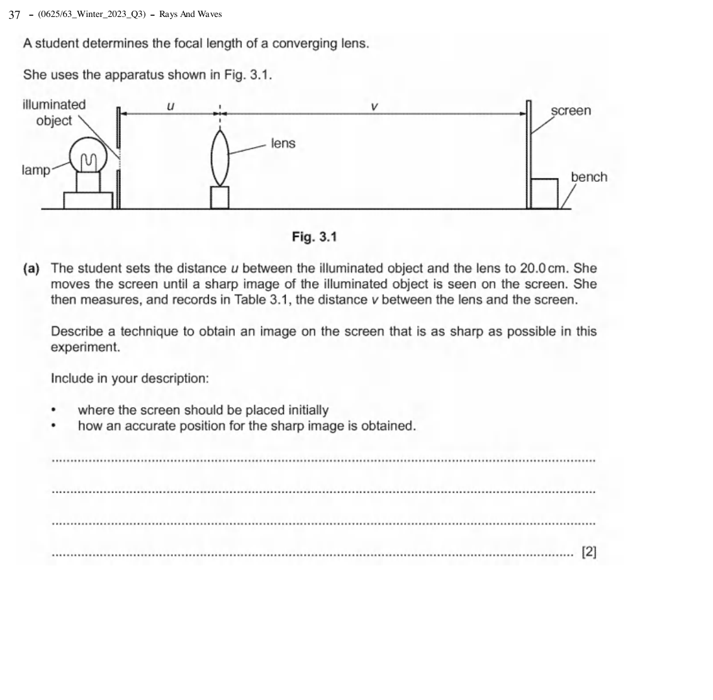
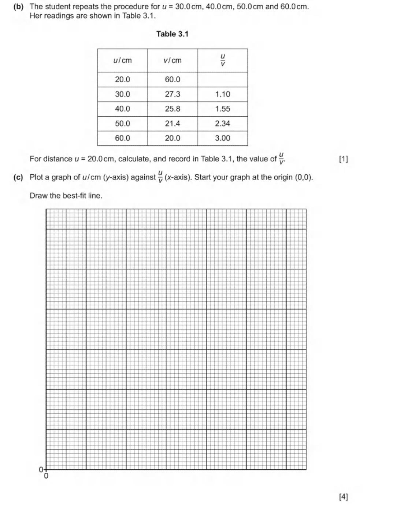
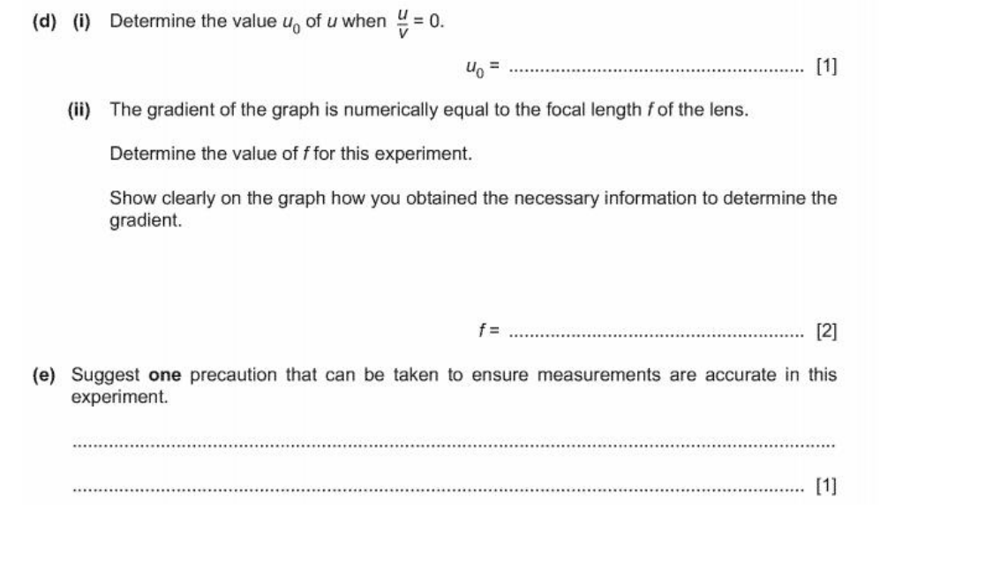
中文题意
一名学生测定会聚透镜的焦距。她使用图3.1所示的器材。
图中illuminated object＝被照亮的物体；lamp＝灯；lens＝透镜；screen＝屏幕；bench＝实验台；u是物体到透镜的距离，v是透镜到屏幕的距离。
(a) 学生把被照亮物体与透镜之间的距离u设为20.0 cm。她移动屏幕，直到屏幕上看到物体的清晰像。随后，她测量透镜与屏幕之间的距离v，并将结果记录在表3.1中。
描述一种方法，使本实验中屏幕上的像尽可能清晰。你的描述应包括：
• 最初应把屏幕放在哪里；
• 如何准确确定清晰像的位置。[2]
(b) 学生分别取u=30.0 cm、40.0 cm、50.0 cm和60.0 cm重复上述步骤，读数列于表3.1。
u/cm
v/cm
u/v
20.0
60.0
____
30.0
27.3
1.10
40.0
25.8
1.55
50.0
21.4
2.34
60.0
20.0
3.00
对于u=20.0 cm，计算u/v，并把结果记录在表3.1中。[1]
(c) 画u/cm（纵轴）对u/v（横轴）的图像。坐标轴从原点(0,0)开始。画最佳拟合线。[4]
(d)(i) 求u/v=0时u的值u₀。u₀=____。[1]
(d)(ii) 图像的梯度在数值上等于透镜的焦距f。求本实验的f。在图上清楚表示你如何取得求梯度所需的信息。f=____。[2]
(e) 提出一项本实验中可采取的预防措施，以确保测量准确。[1]
中文解析
(a) 先把屏幕放在透镜背向物体的一侧，找到能看到像的区域；再沿轴线缓慢向前、向后移动屏幕，比较两边略微模糊的位置，选取最清晰的位置。不能只写“把屏幕放在焦点”，因为有限物距的清晰像一般不在焦平面。
(b) u/v=20.0/60.0=0.333…，按表格写0.33，无单位。
(c) 横轴表示比值u/v，不带单位；纵轴表示以cm为单位的物距u。标出原点，并描出(0.33,20.0)、(1.10,30.0)、(1.55,40.0)、(2.34,50.0)、(3.00,60.0)。最佳拟合直线要平衡点在直线两侧的偏离，不能逐点连折线。图要求显示原点，不要求把拟合线强行通过原点。
本教师参考图对表中舍入数据作最小二乘拟合，得到u/cm≈15.118(u/v)+14.844。
(d)(i) 纵截距u₀≈14.8 cm。手绘图依自己的直线读取，题库评分细则接受13-18 cm。
(d)(ii) 在拟合线上取x=0与x=3.00两点，纵坐标约14.844和60.197 cm。因此Δu≈45.353 cm、Δ(u/v)=3.00，f=梯度≈15.1 cm（3位有效数字），写15 cm（2位有效数字）也符合精度要求。两点来自拟合线，不是强制选原始表格点；在图上画出大三角形。
(e) 可写一项具体措施：把米尺固定于实验台；标记透镜中心在台面上的位置，便于从正确起点测量；保持透镜与屏幕竖直；适当遮光或使用较暗环境帮助判断清晰像。
题干已告诉你梯度的物理意义，因此可用图像解题。为理解其形式，可由1/f=1/u+1/v整理成u=f(u/v)+f，但薄透镜公式在这里是教师拓展解释，无需作为本题额外要求记忆的公式。
English explanation
(a) Initially place the screen on the side of the lens away from the object and find the region where an image is visible. Then move the screen slowly forwards and backwards along the axis, comparing nearby positions to choose the sharpest image. Do not simply say “put the screen at the focus”: an object at a finite distance generally forms its image beyond the focal plane.
(b) u/v = 20.0/60.0 = 0.333…, recorded as 0.33 to match the table. The ratio has no unit.
(c) Put u/v on the horizontal axis, with no unit, and u/cm on the vertical axis. Show the origin. Plot (0.33,20.0), (1.10,30.0), (1.55,40.0), (2.34,50.0) and (3.00,60.0). Draw a best-fit straight line that balances the deviations, rather than joining points in a zigzag. Starting the axes at the origin does not require the fitted line to pass through it.
The teacher model uses least-squares regression of the rounded table values, giving u/cm ≈ 15.118(u/v) + 14.844.
(d)(i) The vertical intercept is u₀ ≈ 14.8 cm. Read from your own hand-drawn best-fit line; the supplied marking range is 13-18 cm.
(d)(ii) Take points on the fitted line at x = 0 and x = 3.00, with vertical values approximately 14.844 and 60.197 cm. Thus Δu ≈ 45.353 cm and Δ(u/v) = 3.00. The gradient, and therefore f, is approximately 15.1 cm to three significant figures, or 15 cm to two significant figures. Draw the large gradient triangle. The points come from the fitted line and need not be measured data points.
(e) One suitable precaution is to clamp the rule to the bench, mark the lens-centre position for distance measurements, keep the lens and screen upright, or use a darkened room to judge the image more clearly.
The question supplies the physical meaning of the gradient. As an optional explanation, rearranging 1/f = 1/u + 1/v gives u = f(u/v) + f. This is a teacher extension, not an additional formula that the question requires the student to recall.
知识点与易错处
能够在光屏上形成的是实像。缓慢来回移动光屏，可以比较邻近位置的清晰程度。最佳拟合线允许测量点分布在直线两侧，纵截距是横坐标为零时直线对应的纵坐标。横坐标无单位时，梯度与纵坐标具有相同单位。
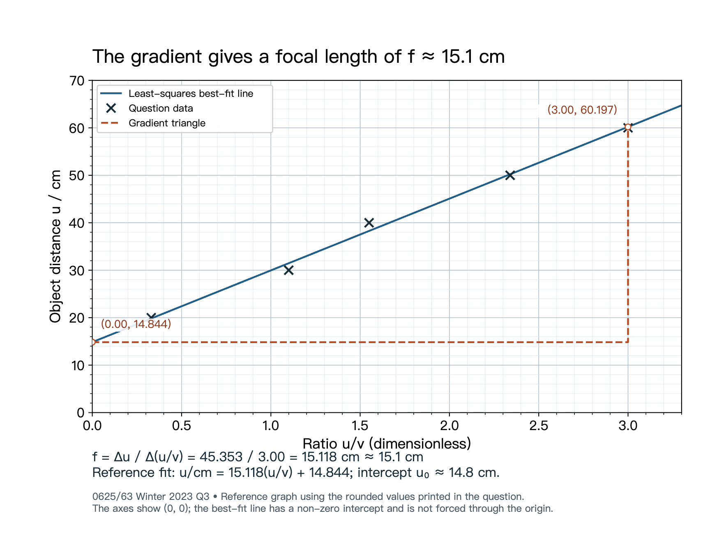
N23 · Ordering the electromagnetic spectrum
Put these waves in order of increasing frequency:
Gamma rays, radio waves, visible light, microwaves, X-rays, infrared, ultraviolet.
中文题意
把下列电磁波按频率递增顺序排列：
伽马射线、无线电波、可见光、微波、X 射线、红外线、紫外线。
中文解析
按频率递增排列，依次为无线电波、微波、红外线、可见光、紫外线、X 射线和伽马射线。其中无线电波的频率最低，伽马射线的频率最高。
所有电磁波在真空中速度相同。由 c₀ = fλ 可知，频率增大时波长减小。答题前确认题目要求的是频率顺序，而不是波长顺序。
English explanation
In order of increasing frequency, the spectrum consists of radio waves, microwaves, infrared, visible light, ultraviolet, X-rays and gamma rays. Radio waves have the lowest frequency in this list, and gamma rays have the highest.
All electromagnetic waves have the same speed in vacuum. From c₀ = fλ, increasing frequency corresponds to decreasing wavelength. Check that you have ordered by frequency, not by wavelength.
知识点与易错处
电磁波谱可以按频率排列，也可以按波长排列。所有电磁波在真空中的速度相同，因此 c₀ = fλ 表明这两种排列顺序相反。
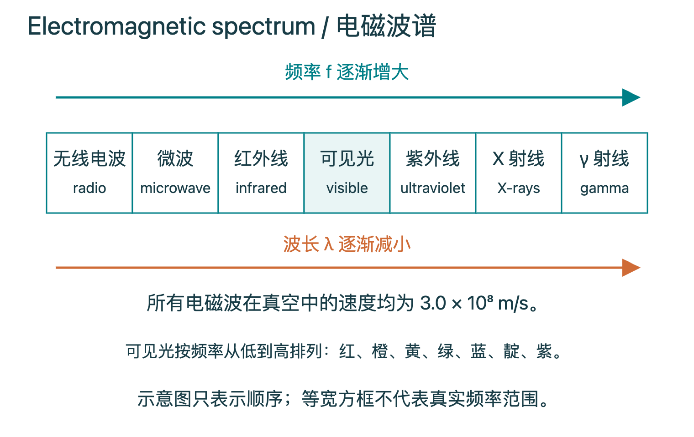
N24 · Uses and dangers of radiation
For each radiation, give one use and one danger:
a) Microwaves
b) Ultraviolet
c) X-rays
d) Gamma rays
中文题意
对每一种辐射，写出一种用途和一种危害：
a) 微波
b) 紫外线
c) X 射线
d) 伽马射线
中文解析
a) 微波可用于卫星通信，也可用于微波加热。过量暴露可能使体内组织受热。
b) 紫外线可用于检查纸币的防伪标记，也可用于净水杀菌。过量暴露可损伤皮肤细胞、增加皮肤癌风险；眼部损伤也是有效危害。
c) X 射线可用于医学成像。它是电离辐射，可能损伤细胞或引起突变，从而增加癌症风险。
d) 伽马射线可用于医疗器材灭菌，也可用于癌症治疗。它是电离辐射，可能损伤健康细胞或引起突变。
每小题各需一种明确用途和一种明确危害，不能统一写“有危险”。也不要把所有波段的穿透能力简单按频率排序。
English explanation
a) Microwaves are used for satellite communication or microwave cooking. Excessive exposure can cause internal heating of body tissue.
b) Ultraviolet radiation is used to detect security markings on banknotes or to sterilise water. Excessive exposure can damage skin cells and increase skin-cancer risk; eye damage is another valid danger.
c) X-rays are used for medical imaging. They are ionising and can damage cells or cause mutations, increasing cancer risk.
d) Gamma rays are used to sterilise medical equipment or treat cancer. They are ionising and can damage healthy cells or cause mutations.
Each part needs one specific use and one specific harm. Do not replace all four dangers with the vague phrase “it is dangerous”, and do not assume penetration simply increases across every part of the spectrum.
知识点与易错处
电磁辐射的用途取决于它与物质相互作用的方式。说明危害时也要写出具体作用，例如使组织受热、损伤细胞或引起电离。
N25 · Analogue and digital signals
a) Describe the difference between analogue and digital signals.
b) State two advantages of digital signals.
c) Explain why digital signals can be more reliable than analogue signals.
中文题意
a) 描述模拟信号与数字信号的区别。
b) 写出数字信号的两个优点。
c) 解释为什么数字信号可能比模拟信号更可靠。
中文解析
a) 模拟信号可在一个范围内连续变化；数字信号用离散的数值或状态表示信息，常见为可解释成 0 和 1 的两个电平。
b) 两个相关优点是较高的数据传输率，以及能够准确再生、从而支持更远距离传输。适当编码的数字数据还可以加入错误检测和纠正。
c) 两类信号都可能受到噪声影响。如果失真没有大到使状态无法辨认，接收器仍可识别数字状态，并重新产生原来预期的电平，减少噪声在多段传输中的累积。模拟信号放大时，混在波形中的噪声也会被放大，较难准确恢复原始波形。
这种优势有条件：噪声大到导致状态误判时，数字通信仍会出错。“数字信号没有噪声”不正确。
English explanation
a) An analogue signal can vary continuously through a range of values. A digital signal represents information using discrete values or states, commonly two levels interpreted as 0 and 1.
b) Two relevant advantages are a high data-transmission rate and accurate regeneration that enables transmission over longer distances. Error detection/correction can also be added to suitably coded digital data.
c) Noise can alter either kind of signal. If the distortion is not too large, a digital receiver can still recognise each discrete state and regenerate the intended levels. This reduces accumulated noise in successive transmission stages. Amplifying an analogue waveform also amplifies noise mixed into it, so the original waveform is harder to restore exactly.
The claim is conditional: digital communication can still fail if noise causes states to be misidentified. “Digital signals have no noise” is incorrect.
知识点与易错处
模拟信号连续变化，数字信号使用离散状态。两类信号都可能受到噪声干扰。只要接收器仍能辨认原有的数字状态，就可以把信号再生为预期的电平。
P2-08 · Digital signals in an optical fibre
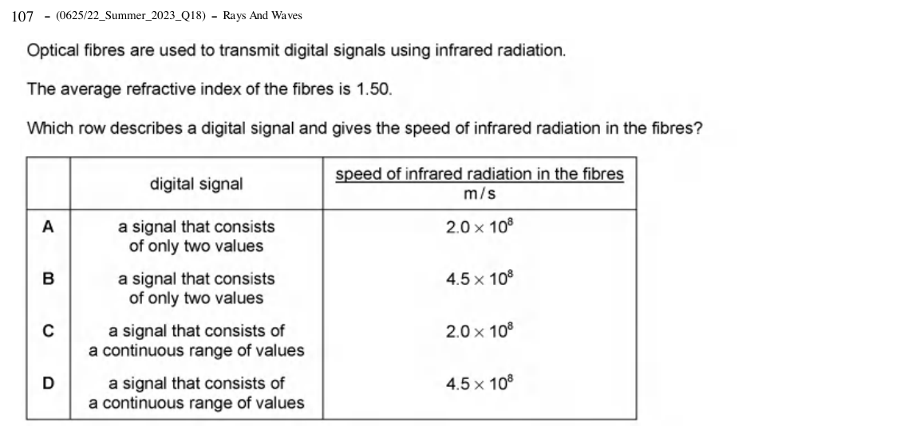
中文题意
光纤利用红外辐射传输数字信号。
光纤的平均折射率为 1.50。
哪一行正确描述了数字信号，并给出了红外辐射在光纤中的速度？
A：只由两个数值组成的信号；2.0 × 10⁸ m/s。
B：只由两个数值组成的信号；4.5 × 10⁸ m/s。
C：由连续取值范围组成的信号；2.0 × 10⁸ m/s。
D：由连续取值范围组成的信号；4.5 × 10⁸ m/s。
中文解析
答案：A。
本题按二进制数字信号处理：信号使用两个离散电平，表示 0 和 1。连续取值范围描述的是模拟信号。
折射率 n = c/v，因此 v = c/n = (3.0 × 10⁸)/1.50 = 2.0 × 10⁸ m/s。
由于 n > 1，光在该材料中的速度应小于真空光速。把 c 乘以 n 得到 4.5 × 10⁸ m/s，是把公式倒置。
注意红外是电磁波；“所有电磁波速度相同”需要注明在真空中。
English explanation
Answer: A.
This question uses a binary digital signal with two discrete levels representing 0 and 1. A continuous range of values describes an analogue signal.
Use n = c/v, so v = c/n = (3.0 × 10⁸)/1.50 = 2.0 × 10⁸ m/s.
Because n > 1, the speed in the fibre must be less than the vacuum speed. Multiplying c by n produces the incorrect 4.5 × 10⁸ m/s.
Infrared is electromagnetic radiation. The common-speed statement for all electromagnetic waves specifically applies in a vacuum.
知识点与易错处
数字信号用离散取值表示信息。本题采用常见的二进制模型，数据由两个信号电平表示。辐射在光纤内的传播速度取决于光纤的折射率，应与真空中的光速区分。
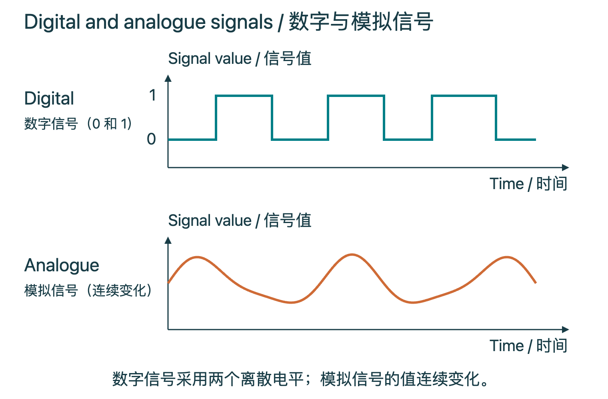
P2-09 · Colours emerging from a prism
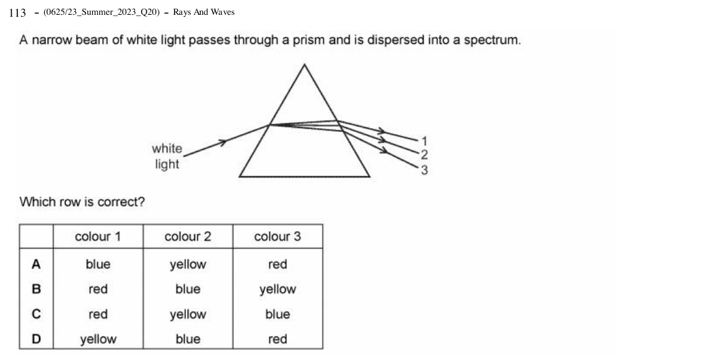
中文题意
一束窄白光通过棱镜，并被色散成光谱。
哪一行正确？
按“颜色 1、颜色 2、颜色 3”的顺序：
A：蓝、黄、红。
B：红、蓝、黄。
C：红、黄、蓝。
D：黄、蓝、红。
图中 white light = 白光；1、2、3 标出三条出射光线。
中文解析
答案：C：1 为红，2 为黄，3 为蓝。
普通玻璃中，不同频率的光受到不同程度的折射，因此白光分开。对本题这三种颜色，红光总偏折最小，蓝光较大，黄光居中。
颜色对应关系应由出射光相对于原入射方向的偏折程度确定。图中 1 偏折最少，因此对应红光；3 偏折最多，因此对应蓝光。
不要把“红光在上”背成普遍规则；棱镜旋转后上下位置会变，但这种普通玻璃情境中的相对偏折顺序不变。
English explanation
Answer: C: 1 is red, 2 is yellow and 3 is blue.
In ordinary glass, the refractive index depends on frequency, so the components of white light are refracted by different amounts. Of these three colours, red has the least deviation, blue the greatest and yellow is between them.
Compare each emerging direction with the original incident direction. Ray 1 has the least deviation and ray 3 the most.
Do not memorise “red is always at the top”: turning the prism changes the page positions, but not this relative deviation order in the stated ordinary-glass situation.
知识点与易错处
只比较几种颜色时，它们的相对偏折程度仍遵循可见光谱中的顺序。转动棱镜会改变各颜色在纸面上的位置，判断时应比较每条出射光线相对于原入射方向的偏折程度。
P2-10 · Radio frequency and wavelength
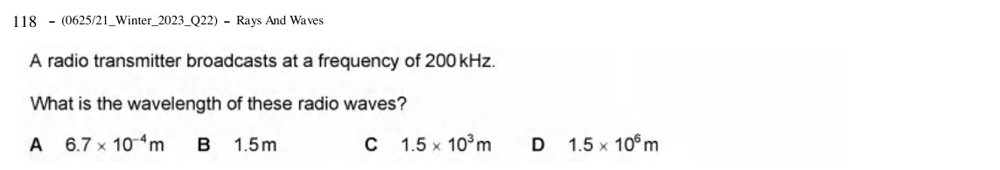
中文题意
一个无线电发射机以 200 kHz 的频率广播。
这些无线电波的波长是多少？
A：6.7 × 10⁻⁴ m。
B：1.5 m。
C：1.5 × 10³ m。
D：1.5 × 10⁶ m。
中文解析
答案：C，1.5 × 10³ m。
代入公式时，频率须以赫兹表示：f = 200 kHz = 200 × 10³ Hz = 2.00 × 10⁵ Hz。
无线电波在空气中的速度近似为 c = 3.0 × 10⁸ m/s。由 v = fλ，得 λ = v/f = (3.0 × 10⁸)/(2.00 × 10⁵) = 1.5 × 10³ m。
数量级检查：10⁸/10⁵ = 10³，因此答案应是约千米量级，而非毫米或百万米量级。
English explanation
Answer: C, 1.5 × 10³ m.
The frequency must be expressed in hertz for the substitution: f = 200 kHz = 200 × 10³ Hz = 2.00 × 10⁵ Hz.
Radio waves in air travel at approximately c = 3.0 × 10⁸ m/s. Rearranging v = fλ gives λ = v/f = (3.0 × 10⁸)/(2.00 × 10⁵) = 1.5 × 10³ m.
Check the power of ten: 10⁸/10⁵ = 10³, so a kilometre-scale result is sensible.
知识点与易错处
单位前缀表示十的幂次倍数：k = 10³，M = 10⁶，G = 10⁹。代入公式前换成 SI 单位，可以避免不同数量级混用。科学计数法中的系数与十次幂应分别正确计算，波长的 SI 单位为 m。
P4-07 · Microwaves and digital communication
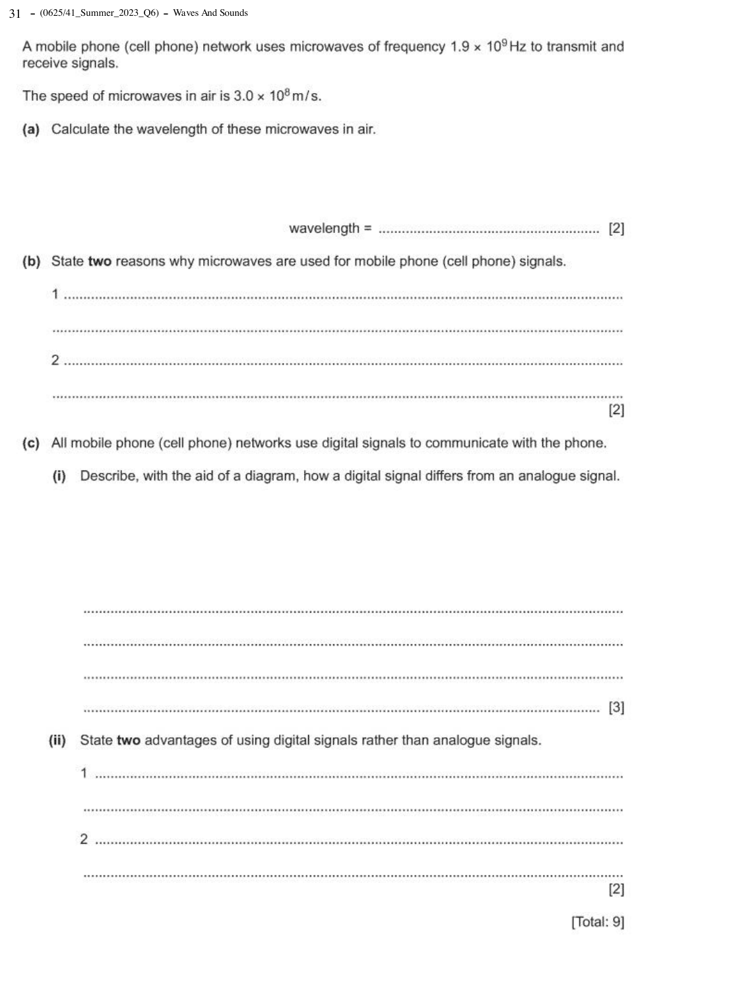
中文题意
移动电话（手机）网络使用频率为 1.9 × 10⁹ Hz 的微波来发送和接收信号。
微波在空气中的速度为 3.0 × 10⁸ m/s。
(a) 计算这些微波在空气中的波长。[2]
(b) 写出手机信号使用微波的两个原因。[2]
(c) 所有移动电话网络都使用数字信号与手机通信。
(i) 借助图示，描述数字信号与模拟信号有何不同。[3]
(ii) 写出使用数字信号而不是模拟信号的两个优点。[2]
[总分 9]
中文解析
(a) λ = v/f = (3.0 × 10⁸)/(1.9 × 10⁹) = 0.15789… m，取 0.16 m。[2] 注意频率的 10⁹ 与速度的 10⁸。
(b) 可得分的两个原因是：手机只需要较短的天线，且微波能穿过某些墙壁。[各 1 分] 题目是手机网络，应选择符合手机尺寸和建筑环境的原因。“穿过大气层”适用于解释卫星通信，不能直接说明本题中手机与地面网络之间的通信要求。
(c)(i) 画两幅有标签的“信号值—时间”图。数字图用低、高两个电平，标 0 和 1，以台阶表示转换；模拟图画在一个范围内连续变化的曲线。文字写：数字信号采用两个离散值；模拟信号可以在一个范围内连续变化。[3] 不要把数字图画成只有两个孤立的数据点。
(c)(ii) 可选以下两个独立优点，例如：①噪声更容易去除，能把 0/1 电平重新判定并再生；②数据可压缩，从而支持较高的信息传输率。评分表还接受再生使信号可在更长距离上传送等表述。[2]
不能答“数字信号完全不受噪声影响”，也不能把较高数据率解释为微波在空气中的传播速度更大。同一介质中的传播速度与每秒传送的信息量是两个概念。
English explanation
(a) λ = v/f = (3.0 × 10⁸)/(1.9 × 10⁹) = 0.15789… m, giving 0.16 m. [2] Keep track of the different powers of ten.
(b) Two credited reasons are that microwaves need only short aerials and can penetrate some walls. [1 each] Choose reasons suited to portable phones and buildings, rather than automatically importing a satellite-link explanation.
(c)(i) Draw two labelled signal-value–time graphs. For digital, draw high and low levels labelled 1 and 0 with step-like transitions. For analogue, draw a continuously varying curve. State that the binary digital signal uses two discrete values, whereas the analogue signal varies continuously over a range. [3] Two isolated dots are not a suitable signal-time diagram.
(c)(ii) Choose two independent advantages. For example: noise can be removed more easily by recognising and regenerating the 0/1 levels; data can be compressed, supporting a higher information transmission rate. The scheme also accepts transmission over greater distances because the signal can be regenerated. [2]
Do not claim that digital signals are immune to noise, or that a higher data rate makes the microwaves travel faster. Propagation speed and information transferred per second are different quantities.
知识点与易错处
噪声会使数字信号偏离理想电平。只要接收器仍能辨认原来的高、低状态，就能重建信号；干扰过大时仍会发生判错。信号图表示这些电平随时间怎样变化。数据率衡量每秒传送的信息量，传播速度衡量波每秒传播的距离，两者须分别理解。
N09 · Speed of sound from an echo
A wall is 80 m away. An echo is heard 0.48 s after a loud bang.
Calculate the speed of sound.
中文题意
一面墙距离声源 80 m。发出一声巨响后，0.48 s 听到回声。
计算声速。
中文解析
声音先到墙面，再返回，传播总路程为 2 × 80 = 160 m。
声速 = 总路程/时间 = 160/0.48 = 333.3… m/s。
约为 330 m/s，即 3.3 × 10² m/s，与原笔记的近似答案一致。
若只用 80 m，就漏掉回程，使计算声速少一半。此处按声源与听者在同一位置理解。
English explanation
The sound travels to the wall and returns, so its total path is 2 × 80 = 160 m.
Use speed = total distance/time = 160/0.48 = 333.3… m/s.
Give about 330 m/s (3.3 × 10² m/s), consistent with the source's rounded answer.
Using only 80 m would omit the return journey and halve the calculated speed. The source and listener are understood to be at the same location.
知识点与易错处
速度等于传播总路程除以所需时间。回声经过反射后返回声源处，因此计时包含到达反射面的去程和返回的回程。
N26 · Producing and transmitting sound
a) State what produces sound.
b) State the type of wave sound is.
c) Explain why sound travels faster in solids than in gases.
中文题意
a) 写出声音是由什么产生的。
b) 写出声音属于哪种波。
c) 解释为什么声音在固体中比在气体中传播得快。
中文解析
a) 声音由振动的物体或声源产生；振动使周围介质产生扰动。
b) 空气中的声音是纵向机械波。粒子沿传播方向往复振动，形成密部与疏部，并且需要介质。
c) 典型固体中，相邻粒子之间有较强的回复作用。一个粒子偏离原位置后，会较快带动相邻粒子振动，因此扰动能较快传播。气体的弹性刚度小得多，扰动通常传播得较慢。声速同时取决于弹性刚度和惯性/密度，因此这是通常情形，不能只凭粒子间距作绝对排序。也不能理解为固体粒子随着声波一路运动到听者处。
English explanation
a) Vibrating objects or sources produce sound. Their motion creates disturbances in the surrounding medium.
b) Sound in air is a longitudinal mechanical wave. Particles oscillate parallel to propagation, producing compressions and rarefactions; a medium is required.
c) In typical solids, particles are closely coupled by strong restoring interactions, so a displacement is communicated quickly to neighbouring particles. Gases are much less stiff, and disturbances generally propagate more slowly. The speed depends on elastic stiffness and inertia/density, so this is the usual comparison, not a universal ranking based only on particle spacing. It does not mean solid particles travel with the sound from source to listener.
知识点与易错处
振动声源把扰动传给周围介质。纵波中的相邻粒子一边沿传播方向振动，一边传递扰动。粒子间的回复相互作用以及粒子的惯性共同影响传播速度。
N27 · Echo timing and sound speed
A student stands 170 m from a wall and claps. The echo is heard 1.0 s later.
a) Calculate the speed of sound.
b) Explain why the distance travelled by the sound is not 170 m.
中文题意
一名学生站在距离墙面 170 m 处拍手，1.0 s 后听到回声。
a) 计算声速。
b) 解释为什么声音传播的路程不是 170 m。
中文解析
a) 往返总路程 s = 2 × 170 = 340 m。
v = s/t = 340/1.0 = 340 m/s，即 3.4 × 10² m/s。
b) 计时包含学生到墙面的去程，以及墙面反射后回到学生的回程。每段都是 170 m，因此声音总共传播 340 m。“学生到墙的距离”与“声音总路程”是不同的量。
English explanation
a) The round-trip distance is s = 2 × 170 = 340 m.
v = s/t = 340/1.0 = 340 m/s (3.4 × 10² m/s).
b) The timed interval includes travel from the student to the wall and then back from the wall to the student. Each leg is 170 m, so the sound travels 340 m in total. The wall distance and the sound's total path are different quantities.
知识点与易错处
回声是反射后返回的声音。声源与听者位于同一位置时，声音在去程和回程中各传播一次到墙面的距离。
N28 · Ultrasound and sea depth
A boat sends an ultrasound pulse to the seabed. The echo returns after 0.80 s. The speed of sound in seawater is 1500 m/s.
a) Calculate the depth of the sea.
b) State one other use of ultrasound.
中文题意
一艘船向海床发射一个超声脉冲，0.80 s 后收到回波。声音在海水中的传播速度为 1500 m/s。
a) 计算海深。
b) 写出超声波的另一种用途。
中文解析
a) 测得时间是超声脉冲到海床再返回的总时间。
总路程 s = vt = 1500 × 0.80 = 1200 m。
海深 d = s/2 = 600 m，即 6.0 × 10² m。按本题预期，脉冲竖直传播，发射位置近似在水面。
b) 另一种用途可答软组织或胎儿的医学超声扫描，也可答检测金属内部裂缝的无损检测。超声是频率高于 20 kHz 的机械声波，不是电磁辐射。
English explanation
a) The measured time is for the pulse to travel to the seabed and back.
Total path s = vt = 1500 × 0.80 = 1200 m.
Depth d = s/2 = 600 m (6.0 × 10² m), assuming the pulse travels vertically and the transmitter is effectively at the water surface as intended in this question.
b) One other use is medical scanning of soft tissue or an unborn baby. Another valid example is non-destructive testing to locate cracks inside metal. Ultrasound is mechanical sound above 20 kHz, not electromagnetic radiation.
知识点与易错处
回声测距记录的时间包括去程和回程，vt 得到两段路程之和。当脉冲竖直传播时，用 d = vt/2 求出单程距离，也就是所测深度。
N29 · Reading a sound waveform
A sound wave is displayed on an oscilloscope.
a) Explain how the display changes if the sound becomes louder.
b) Explain how the display changes if the pitch increases.
c) What wave property determines loudness?
d) What wave property determines pitch?
中文题意
示波器上显示一个声音信号的波形。
a) 解释声音变响时，显示的波形怎样变化。
b) 解释音调升高时，显示的波形怎样变化。
c) 哪个波的性质决定响度？
d) 哪个波的性质决定音调？
中文解析
比较时保持示波器的纵向增益和时基设置不变。
a) 声音更响时，信号振幅增大，波峰和波谷离中线更远。如果只改变响度，水平方向峰间距不必改变。
b) 音调升高表示频率增大、周期缩短；沿时间轴看，相邻波峰更靠近，同一时间窗内可容纳更多完整周期。纵向高度不必改变。
c) 在其他听音条件相同时，振幅越大，声音越响。实际听感还会受到距离等因素影响。
d) 音调由频率决定，频率越高，音调越高。
横轴表示时间。示波器上出现正弦曲线，不意味着空气中的声音变成了横波。
English explanation
Keep the oscilloscope's vertical gain and time-base settings unchanged for the comparisons.
a) Greater loudness gives a larger signal amplitude: peaks and troughs extend farther from the centre line. If only loudness changes, their horizontal separation need not change.
b) Higher pitch means higher frequency and a shorter period. Successive peaks are closer together along the time axis, so more cycles fit into the same time window. Their vertical height need not change.
c) With other listening conditions held constant, a greater amplitude makes the sound louder. Perceived loudness also depends on factors such as distance.
d) Frequency determines pitch: a higher frequency corresponds to a higher pitch.
The horizontal axis is time. A sinusoidal trace on the screen does not mean that sound in air is transverse.
知识点与易错处
示波器波形的纵向刻度表示信号大小，水平方向的时间刻度用于读取周期。比较振幅与频率时，应保持纵向增益和时基设置不变。
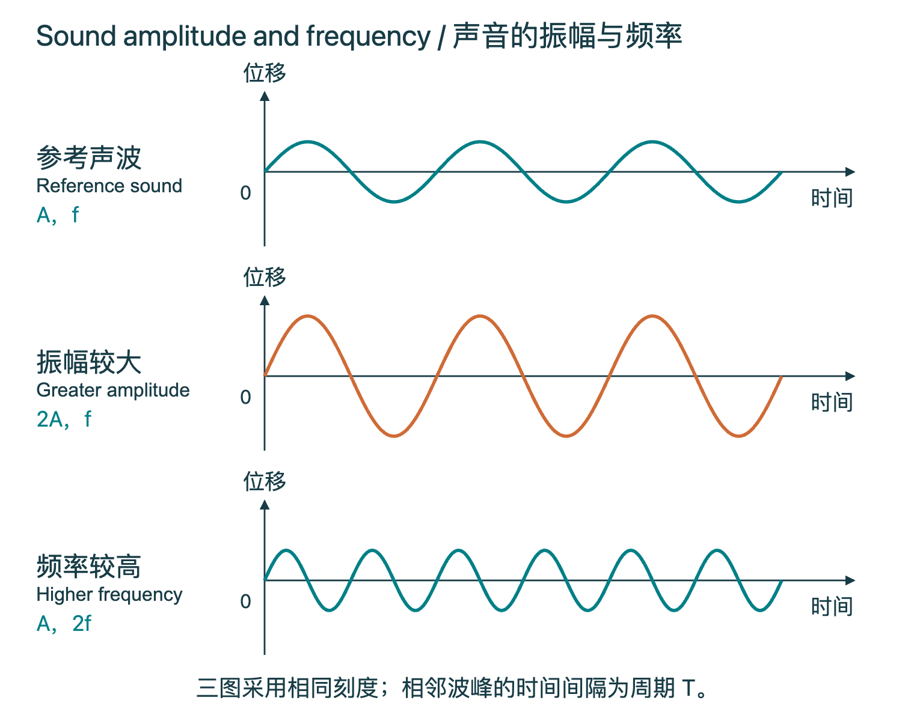
P2-11 · Timing an echo
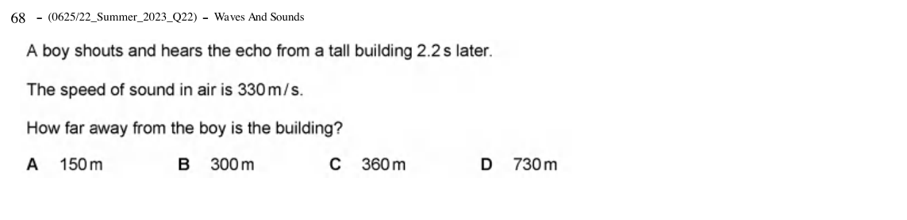
中文题意
一个男孩大声呼喊，2.2 s 后听到来自一座高楼的回声。
空气中的声速为 330 m/s。
高楼离这个男孩多远？
A：150 m。B：300 m。C：360 m。D：730 m。
中文解析
答案：C，约 360 m。
计时从发声开始，到回声返回耳朵时结束。声音先从男孩传到高楼，再反射回男孩，所以总路程是 2d。
2d = vt = 330 × 2.2 = 726 m，因此 d = 363 m，按选项及题目精度选约 360 m。
730 m 接近声音的往返总路程，不能当作男孩到高楼的单程距离。
English explanation
Answer: C, approximately 360 m.
The interval starts when the sound is produced and ends when the echo returns. The sound travels to the building and back, so its total distance is 2d.
2d = vt = 330 × 2.2 = 726 m, giving d = 363 m, or approximately 360 m at the precision of the options.
About 730 m is the round-trip distance, not the one-way distance to the building.
知识点与易错处
应根据计时的起点与终点确定声音经过的路径。声源与接收者位于同一位置时，回声时间包括去程和回程，可用 d = vt/2 求反射面距离。若测量的是声音单程到达的时间，则只计算从声源到接收者的一段路程。
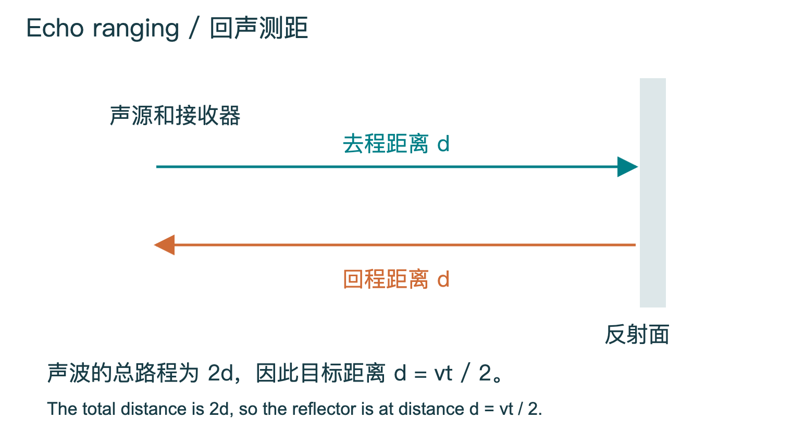
P2-12 · Sound speed in different materials
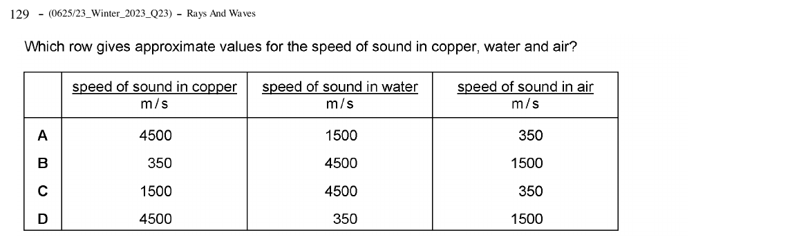
中文题意
哪一行给出了声音在铜、水和空气中的近似速度？
单位均为 m/s；各行依次为“铜中的声速、水中的声速、空气中的声速”：
A：4500，1500，350。
B：350，4500，1500。
C：1500，350，4500。
D：4500，350，1500。
中文解析
答案：A。
这三个典型介质的近似声速为：铜 4500 m/s，水 1500 m/s，空气 350 m/s。因此按题目要求的顺序选 A。
这是常见材料的比较：在铜中最快，在水中其次，在空气中最慢。声音仍由介质中的振动传递；不能把真空光速用于声波。
声速与音调、响度不同。题目给出的空气声速若为 330 或 340 m/s，计算时应采用题目数值；350 m/s 在本题中是供识别的近似值。
English explanation
Answer: A.
The approximate values in this comparison are 4500 m/s in copper, 1500 m/s in water and 350 m/s in air, in the order requested.
For these common materials, sound is fastest in copper and slowest in air. Sound is transmitted by vibrations in a medium; the vacuum speed of light is irrelevant.
Wave speed is distinct from pitch and loudness. Other questions may specify 330 or 340 m/s for air; use the value supplied for that calculation. Here, 350 m/s is an approximate recognition value.
知识点与易错处
用于辨认材料的近似声速，可能与另一道计算题给定的声速略有不同。声速取决于材料的弹性性质、密度和状态，不能把“所有固体都比所有液体快”当成无条件定律。本题要求辨认的是所列材料的典型值。
P4-08 · A medical sound wave
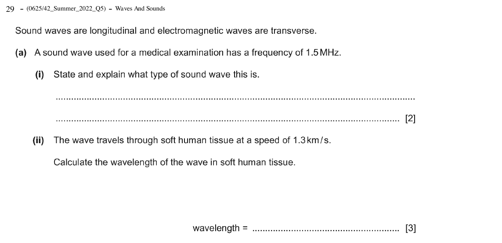
中文题意
本题选取原卷第 5 题的 (a) 部分。
声波是纵波，电磁波是横波。
(a) 一种用于医学检查的声波，频率为 1.5 MHz。
(i) 写出并解释这属于哪一种声波。[2]
(ii) 这种波以 1.3 km/s 的速度在人体软组织中传播。计算它在软组织中的波长。[3]
波长 = ________。
中文解析
(a)(i) 这是超声波（ultrasound）。1.5 MHz = 1.5 × 10⁶ Hz，高于人耳通常听觉上限 20 kHz = 2.0 × 10⁴ Hz。类别和超过听觉上限的理由各对应一个评分点。[2]
(a)(ii) 先把两项数据换为一致单位：v = 1.3 km/s = 1.3 × 10³ m/s；f = 1.5 MHz = 1.5 × 10⁶ Hz。
λ = v/f = (1.3 × 10³)/(1.5 × 10⁶) = 8.666… × 10⁻⁴ m ≈ 8.7 × 10⁻⁴ m，也就是约 0.87 mm。[3]
本小题计算的是波长，没有反射往返时间，不能额外除以 2。使用的是软组织声速，不能换成空气声速或真空光速。
English explanation
(a)(i) It is ultrasound. The frequency 1.5 MHz = 1.5 × 10⁶ Hz is above the usual upper hearing limit of 20 kHz = 2.0 × 10⁴ Hz. The classification and the reason supply the two marking points. [2]
(a)(ii) Convert both quantities: v = 1.3 km/s = 1.3 × 10³ m/s and f = 1.5 MHz = 1.5 × 10⁶ Hz.
λ = v/f = (1.3 × 10³)/(1.5 × 10⁶) = 8.666… × 10⁻⁴ m ≈ 8.7 × 10⁻⁴ m, or approximately 0.87 mm. [3]
This is a wavelength calculation, not an echo-time calculation, so do not introduce a factor of two. Use the supplied speed in tissue, not the speed in air or the speed of light.
知识点与易错处
医学场景中的解题方法仍取决于题目所求的量。求波长时使用波速与频率；若根据返回的回声求距离，才需要考虑往返路程。软组织中的超声仍然是需要介质的机械纵波。
P6-01 · Timing oscillations and plotting a graph
中文题意
一名学生研究单摆的周期。图1.1和图1.2表示实验装置。
图中标注：clamp＝夹具；bob＝摆球；l＝摆长；one complete oscillation＝一次完整振动。
(a) 简要说明如何尽可能准确地测量到摆球中心的位置。[1]
(b) 学生调整摆长，使从悬挂单摆的夹具底部到摆球中心的距离l为50.0 cm。
该学生把摆球稍稍拉离平衡位置，然后松手使其摆动。图1.2表示一次完整振动。
该学生测量并记录20次完整振动所用的时间t。
(i) 计算单摆的周期T，并将它记录在表1.1中。周期是一次完整振动所用的时间。[1]
(ii) 计算T²，并将它记录在表1.1中。[1]
表1.1（空格保持原题待填状态）：
l/cm
t/s
T/s
T²/s²
50.0
28.2
____
____
60.0
31.2
1.56
2.43
70.0
33.6
1.68
2.82
80.0
35.8
1.79
3.20
90.0
38.2
1.91
3.65
该学生分别取l=60.0 cm、70.0 cm、80.0 cm和90.0 cm重复上述步骤。读数和结果已列在表1.1中。
(c) 在图纸上画T²/s²（纵轴）对l/cm（横轴）的图像。T²/s²轴应从接近T²/s²最小值的一个方便数值开始。[4]
(d) 求该图像的梯度。在图上清楚表示你如何取得所需的信息。G=____。[3]
(e) 简要解释为什么测20次振动所用的时间，比测1次振动所用的时间，能够得到更准确的周期T。[1]
中文解析
(a) 把米尺竖直放在摆球附近，用水平直角尺或水平标记把摆球中心位置投到米尺刻度上；也可使摆球尽量靠近直尺。测量终点是中心，不能无说明地量到摆球底端。
(b)(i) 周期表示一次完整振动所用的时间，所以T=总时间/完整振动次数=28.2/20=1.41 s。
(b)(ii) T²=(1.41 s)²=1.9881 s²。与表格保持一致，写1.99 s²；本题评分细则要求正确舍入到两位小数。
(c) 纵轴标T²/s²，横轴标l/cm。参考图把纵轴从1.8开始；选择便于读数的均匀比例尺，准确描出五点，再画细而连续的最佳拟合直线。不要把实验点逐个连成折线。
(d) 在最佳拟合线上取相距较远的两点，例如本参考图的(50.0,2.000)和(90.0,3.636)。大三角形给出Δl=40.0 cm、ΔT²=1.636 s²，因此G=1.636/40.0=0.0409 s²/cm。这里是对题给数据作最小二乘拟合的参考答案；手绘拟合不必得到完全相同数字，题库评分范围为0.038-0.044。
(e) 计时开始与结束时的反应时间误差，不会随振动次数按同一比例增大。测量较长的总时间，会使反应时间占总计时的比例更小；把总时间除以20后，得到的单次周期也具有较小的相对不确定性。不能写“反应时间消失”。
English explanation
(a) Place a vertical rule close to the bob. Use a horizontal set square or horizontal aid to transfer the position of the centre of the bob to the scale. Alternatively, position the bob very close to the rule. The endpoint is the centre of the bob, not its bottom.
(b)(i) T = total time / number of complete oscillations = 28.2 / 20 = 1.41 s.
(b)(ii) T² = (1.41)² = 1.9881 s². Record 1.99 s² to match the two decimal places used in this table. The supplied mark scheme specifies correct rounding to two decimal places.
(c) Label the vertical axis T²/s² and the horizontal axis l/cm. Use a convenient linear scale; the model graph starts the vertical axis at 1.8. Plot all five points accurately and draw a thin, continuous best-fit straight line. Do not join the points one by one.
(d) Take two well-separated points on the best-fit line. In this model, they are (50.0, 2.000) and (90.0, 3.636). The large gradient triangle gives Δl = 40.0 cm and ΔT² = 1.636 s². Hence G = 1.636 / 40.0 = 0.0409 s²/cm. This is a least-squares model answer; a reasonable hand-drawn line can differ. The supplied mark scheme accepts 0.038-0.044.
(e) The start/stop reaction-time uncertainty is a smaller fraction of a longer measured interval. Timing 20 oscillations therefore gives a smaller percentage uncertainty in the period. The reaction-time error is reduced in importance, not eliminated.
知识点与易错处
周期是完成一次完整振动所需的时间。若回到原位置时运动方向与开始时相反，可能尚未完成一次振动。计算过程中保留足够精度，填表时再按表格要求舍入。求梯度须在最佳拟合线上取点，用纵坐标变化量除以横坐标变化量，梯度单位也按相同方式相除。
P6-05 · Planning a colour and focal-length experiment
中文题意
一名学生研究改变光的颜色对透镜焦距的影响。
透镜焦距由公式f=uv/(u+v)给出。
距离u是物体与透镜之间的距离；距离v是透镜与屏幕上所成像之间的距离。
设计一个实验，研究改变光的颜色对透镜焦距的影响。
学生可以使用以下器材：
• 被照亮的物体；
• 一组用于改变光的颜色的彩色滤光片；
• 会聚透镜；
• 屏幕；
• 米尺。
也可以使用学校实验室通常具备的其他器材。
你的方案应包括：
• 画出带标注的图，表示器材的布置；
• 解释如何进行研究，包括你会进行哪些测量；
• 画出带有列标题的合适表格，说明如何记录读数（不要求在表格中填入任何读数）；
• 说明将如何利用实验结果得出结论。
[7]
中文解析
本题是实验方案，没有给定观测结果。不能把预想的颜色顺序写成已经测出的结果。
1. 画有标注的装置图：光源照亮物体，物体、凸透镜和屏幕沿同一水平轴线摆放，米尺平行于轴线。把滤光片放在光源与物体之间，或物体与透镜之间。标清u、v及透镜中心。
2. 选第一种颜色滤光片。移动屏幕或调整物体/透镜，直到屏幕上得到清晰的实像；可在较暗环境下缓慢前后微调屏幕。
3. 从透镜中心测量u与v，记录单位。使两者采用相同长度单位。
4. 代入题给公式f=uv/(u+v)计算这一颜色的焦距。
5. 保持同一透镜及一致的测量方式，换用其他颜色滤光片，重复步骤。可对每种颜色重新调焦测量多次，并求平均焦距；这是提高可靠性的补充，不冒称原题评分细则要求的独立得分项。
6. 表格应分别设置滤光片颜色、u、v 和 f 的列，并在三个长度列的表头标注单位 cm。若重复测量，则增加试次与平均f/cm。颜色用于区分实验条件，u 和 v 记录测量结果，f 记录计算结果；这三个长度量均须标明单位。
滤光片颜色
u/cm
v/cm
f/cm
____
____
____
____
____
____
____
____
____
____
____
____
比较不同颜色所得焦距，或按颜色分别画出表示焦距的条形图。考察各颜色的差值相对于重复测量的离散程度是否明显，据此判断改变颜色是否影响焦距及如何影响。不能仅写“画图并观察”。
评分细则共考查7个方面：装置图是否标注明确，是否获得清晰的像，是否测量u与v，是否计算f，是否改变颜色并重复实验，表格是否合适，以及是否说明根据结果得出结论的方法。
English explanation
This is an experimental plan, not a set of observations. Do not present an expected colour trend as a measured result.
1. Draw a labelled arrangement with an illuminated object, converging lens and screen along one horizontal axis, and a metre rule parallel to that axis. Place a coloured filter either between the source of illumination and the object or between the object and the lens. Label u, v and the centre of the lens.
2. Select the first filter. Adjust the screen, object or lens to obtain a sharply focused real image on the screen. A darkened room and slow forward-and-back screen movements can help identify the sharpest position.
3. Measure u and v from the centre of the lens. Record both in the same length unit.
4. Calculate the focal length from the supplied equation f = uv/(u + v).
5. Keep the same lens and a consistent measurement method, then repeat with different filter colours. Repeated refocusing and measurements for each colour, followed by a mean focal length, would improve reliability; this is an additional good practice, not a separate claimed mark in the supplied scheme.
6. Use a separate table column for the filter colour and for each of u, v and f, expressing all three lengths in cm. If repeated trials are used, add trial identifiers and mean f/cm. Include the required units.
Filter colour
u/cm
v/cm
f/cm
____
____
____
____
____
____
____
____
____
____
____
____
Compare the calculated focal lengths or plot a bar chart of focal length against filter colour. Use the differences, together with the spread of repeated readings, to decide whether and how colour affects focal length. Explain how the comparison produces a conclusion.
The seven marking areas are a labelled diagram, obtaining a sharp image, measuring u and v, calculating f, repeating with different colours, a suitable table, and a method for reaching a conclusion.
知识点与易错处
实验方案须说明改变哪一个因素、测量哪些量，以及保持哪些条件不变。题目给出的公式可以直接使用，但 u 与 v 须采用相同单位。滤光片颜色是类别，应通过表格或条形图比较各颜色对应的焦距；若随意给颜色编号，算出的斜率没有明确的物理意义。